Chapter 1 Vector analysis
课上随笔
1.对矢量场求散度实际上是在求该处的源强度，这也是为什么对E求散度在不是电荷的位置结果为0
2.散度可以描述open field，但是对于闭合场来说，散度总是0，无法用于描述，但是可以使用
标量场和向量场
定义:数学上来说，场是位置的函数
标量场 Scalar field
-
标量:只有大小，如电压U、电荷量Q、电流I、面积S
-
如果在某一时刻，空间中的每一点都对应一个标量值，那么这个标量函数就构成了一个标量场
-
标量场可以用等值面（线）来可视化，比如等温线、等压线
-
常见标量场有:温度场、压力场、密度场
标量场和它的梯度 Scalar field and its gradient
标量场是描述空间中每一点对应一个标量值的物理量或函数。例如温度分布、电势分布等。根据是否随时间变化，可分为两类：
- 恒定标量场(Time-independent constant scalar field)：只与位置有关，表示为 $f(r)$ ；
- 时变标量场(Time-dependent/Time-varying scalar field)：既与位置有关又与时间有关，表示为 $f(r,t)$
等高线&等值面 contour&isosurface
- 用于描述标量场空间分布
- 对于一个标量场$f(r)$,等值面方程由$f(x,y,z)=C(常数)$定义，即所有函数值等于同一常数的点构成的曲面；在二维情况下，称为等值线
梯度 Gradient
-
对于一个标量场$f(x,y,z)$的某一个点P，朝着不同的方向移动，标量f变化的快慢(即方向导数)是不一样的，在所有方向中，存在一个特定方向，使得f值增加的最快，我们就把具有大小（就是这个最大的变化率的值）和方向（就是这个增加最快的方向）的这个矢量，定义为该标量f在P点的梯度，记作 $$ \nabla f $$
-
计算方式为:
- 梯度本质上说是一个向量，它的方向指向函数增加最快的方向，模长也就是大小，表示最大变化率有多大
$$ \nabla f = \left( \frac{\partial f}{\partial x}, \frac{\partial f}{\partial y}, \frac{\partial f}{\partial z} \right) $$
-
为什么是求偏导得到的：
-
数学上的方向导数 Directional derivative:
- 定义式(便于理解含义而非最常见的计算方法)
以三元函数$f(x,y,z)$为例:
有一个点$P_0(x_0,y_0,z_0)$,将它带入方程会得到一个因变量坐标系里的一个点，记为$P'$
而自变量$P_0$沿着不同的方向移动,比如$\vec{u}$(可以是单位向量，也可以不是然后化成单位向量，之所以要化成单位向量下面会说) $$ \lim_{t→0}\frac{f(x_0+\Delta x,y_0+\Delta y,z_0+\Delta z)-f(x_0,y_0,z_0)}{\sqrt{\Delta x^2+\Delta y^2+\Delta z^2}} $$ 自变量的变化会导致因变量即$f(x,y,z)$的变化
则函数f上的点$P_0$沿着$\vec{u}$方向的方向导数定义为:（注意三个要素，函数，函数上的点，点的移动方向）
其中$\Delta x、\Delta y、\Delta z$等是按照$\vec u$的方向改变的,即: $$ \Delta x=\rho \cos \alpha;
\Delta y=\rho\cos \beta;
\Delta z=\rho\cos \gamma $$
- 上面的可以称为定义式，我们一般计算不用这个，在可微的情况下我们一般这样计算方向导数: $$ \nabla f·\vec{u} $$ 其中$\Delta f$是函数的梯度，带入点坐标则为函数f在点P的梯度，而$\vec{u}$则表示自变量变化的具体方向的单位向量(也就是题干当中常见的，求某点沿单位向量$\vec {u}$的方向导数的$\vec{u}$)
其实意会一下，方向导数就是指的函数的某一自变量点，在定义域里找了一个方向，然后自变量沿着这个方向移动时，因变量的变化率
-
在物理中的梯度(和方向导数的关系)
其实从上文我们可以看出，在函数和点坐标确定后，沿着不同的方向，因变量，也就是函数值，变化率也不一样
而梯度是函数和点确定时，方向导数最大时的自变量移动方向
之所以说是最大，可以看下方的证明:
我们已知，在一个标量场$u=f(x,y,z)$中取一点，沿不同方向变化率是不一样的
从$P_0$出发沿着一个给定方向(用单位向量$\vec{l}=(\cos{\alpha},\cos{\beta},\cos{\gamma})$)移动微小距离$\Delta l$
函数值$u$也会变化，总变化值记为$\Delta l$
根据多元函数的全微分公式，当移动的增量很小时，函数值的总变化量可以近似表示为各个方向变化量之和： $$ \Delta u \approx \frac{\partial u}{\partial x} \Delta x + \frac{\partial u}{\partial y} \Delta y + \frac{\partial u}{\partial z} \Delta z $$ 那么变化率是: $$ \frac{\partial u}{\partial l} \approx \frac{\partial u}{\partial x} \cos{\alpha}+ \frac{\partial u}{\partial y} \cos{\beta} + \frac{\partial u}{\partial z} \cos{\gamma} $$ 也即:任何方向的方向导数，都是三个偏导数的加权和，权重就是方向余弦
将这个式子改写成: $$ \frac{\partial u}{\partial l}=\vec{G}·\vec{l} $$ 其中: $$ \vec{G}=(\frac{\partial u}{\partial x},\frac{\partial u}{\partial y},\frac{\partial u}{\partial z}) $$
$$ \vec{l}=(\cos {\alpha},\cos{\beta},\cos{\gamma}) $$
根据矢量点积的性质: $$ \frac{\partial u}{\partial l}=\vec{G}·\vec{l}=|\vec{G}||\vec{l}|\cos{\theta}=|\vec{G}|\cos{\theta} $$ 由上式可知: 因为$\theta$表示$\vec{G}$和$\vec{l}$之间的夹角
所以当$\vec{G}$和$\vec{l}$方向相同时，变化率最大，所以我们让$\vec{l}$取$(\frac{\partial u}{\partial x},\frac{\partial u}{\partial y},\frac{\partial u}{\partial z})$即: $$ \vec{l}=(\frac{\partial u}{\partial x},\frac{\partial u}{\partial y},\frac{\partial u}{\partial z}) $$ 按照这个矢量的方向，变化率最大
所以用在梯度上时，我们也取这个矢量作为方向，因为这个方向的变化率最大
-
-
梯度的一些性质:
-
梯度向量$\nabla{f}$总是垂直于该点的等值面(或等值线)
因为沿着等值面移动，函数值不变（变化率为 0），所以变化最快的方向必然垂直于等值面
-
梯度的模是标量函数 ff 的最大变化率，即该点的最大方向导数
-
梯度的方向是该点方向导数最大的方向
-
-
例题:
Determine the gradient of the scalar function$ψ=x^2yz$ and the directional derivative at a specified direction. This direction is determined by the unit vector $e_l$ and determine the value of the directional derivative at point (2, 3, 1)
$\vec{e_l}=\vec{e_x}\frac{3}{\sqrt{50}}+\vec{e_y}\frac{4}{\sqrt{50}}+\vec{e_z}\frac{5}{\sqrt{50}}$
确定标量函数的梯度，以及指定方向上的方向导数。该方向由单位向量确定，并求在点 (2, 3, 1) 处方向导数的值
-
先求梯度 gradient通式: $$ \frac{\partial \psi}{\partial x}=2xyz; \frac{\partial \psi}{\partial y}=x^2z; \frac{\partial \psi}{\partial z}=x^2y $$ 故: $$ \nabla \psi=(2xyz,x^2z,x^2y) $$ 即: $$ \nabla \psi=2xy·\vec{e_x}+x^2z·\vec{e_y}+x^2y·\vec{e_z} $$
-
带入点坐标:
又因为点坐标是(2，3，1)，所以可以求出偏导数具体值，进而得到梯度具体值: $$ \nabla \psi=(12，4，12) $$
-
求方向导数:
由单位向量$\vec {e_l}$,，由题干当中说“determine the value of the directional derivative at point (2, 3, 1)”,即求在点(2，3，1)处的方向导数的值: $$ \frac{\partial \psi}{\partial l}=\nabla \psi ·\vec{e_l}=\frac{36}{\sqrt{50}}+\frac{16}{\sqrt{50}}+\frac{60}{\sqrt{50}}=\frac{112}{\sqrt{50}} $$
-
-
梯度的基础运算:
其实我感觉就是求导的规则 $$ \nabla c=0(C是常数)\\nabla cf=c\nabla f \\nabla(f±g)=\nabla f±\nabla g \\nabla(fg)=g\nabla f+f\nabla g \\nabla(f/g)=\frac{g\nabla f-f\nabla g}{g^2} \\nabla f(u)=f’(u)\nabla u $$
位置矢量和相对位置矢量 Position vector&Relative position vector
-
对于坐标轴内有点$P(x,y,z)$和点$P’(x’,y’,z’)$，可以定义位置矢量和相对位置矢量： $$ 位置矢量:\vec r=x\vec e_x+y\vec e_y+z\vec e_z $$
$$ 相对位置矢量 :\vec R=\vec r-\vec r’=(x-x’)\vec e_x+(y-y’)\vec e_y+(z-z’)\vec e_z $$

-
相对位置函数$f(r-r’)$的梯度关系 $$ \nabla f=-\nabla’f $$
-
符号含义:
- $\nabla$表示对未带撇的坐标 r 求梯度（即偏导）
- $\nabla’$表示对带撇的坐标 r′ 求梯度
-
原因: $$ \nabla f=\frac{\partial f}{\partial R}·\frac{\partial R}{\partial r} $$
$$ \nabla ‘f=\frac{\partial f}{\partial R}·\frac{\partial R}{\partial r’} $$
而R对r和r’求导刚好差一个负号
-
-
相对位置矢量$\vec R$及其模长$R=|r-r’|$ $$ \nabla R=\frac{\vec R}{R}=\vec e_R $$ 这里表示对相对位置矢量的模长求梯度
即，位置矢量模长的梯度是位置矢量的单位向量 $$ \nabla \frac{1}{R}=-\frac{\vec R}{R^3}=-\frac{\vec e_R}{R^2} $$ 这个式子是前面那个式子加上梯度基础运算法则(感觉和求导没区别)得出的
两个结论的证明如下:
已知： $$ R=\sqrt{(x-x’)^2+(y-y’)^2+(z-z’)^2} $$ 则对x求偏导: $$ \frac{\partial R}{\partial x}=\frac{x-x’}{R} $$ 这个地方就正常求导就行，然后把分母用R替代就这样了
那么同理对y,z求偏导也是这样: $$ \frac{\partial R}{\partial y}=\frac{y-y’}{R}\ \frac{\partial R}{\partial z}=\frac{z-z’}{R} $$ 三个两合并之后即为: $$ \nabla R=\frac{(x-x’)+(y-y’)+(z-z’)}{R} $$ 同时我们知道: $$ \vec R=\vec r-\vec r’=(x-x’)+(y-y’)+(z-z’) $$ 故: $$ \nabla R=\frac{\vec R}{R}=\vec e_R $$ 根据: $$ \nabla f(u)=f’(u)\nabla u $$ 把$\frac{1}{R}$视作$u$是关于R的函数，可以借助上面的基础运算得到: $$ \nabla \frac{1}{R}=-\frac{\vec R}{R^3}=-\frac{\vec e_R}{R^2} $$
哈密顿算符 Hamiltonian operator
$\nabla$是一个向量微算子，它既不是数也不是函数，是一个运算符号，代表一组求偏导操作 $$ \nabla=\vec{e_x}\frac{\partial}{\partial x}+\vec{e_y}\frac{\partial}{\partial y}+\vec{e_z}\frac{\partial}{\partial z} $$
-
单独存在时无意义，但在运算中视为矢量:
-
它必须作用于某个东西（比如一个函数或一个向量场）才能产生意义
-
虽然它是由微分算符组成的“假”向量，但在运算时，我们必须把它当作一个真正的向量来对待。这意味着它可以进行点乘和叉乘
-
$\nabla$有很多作用对象:
- 梯度:当$\nabla$作用于一个标量函数f
- 散度:当$\nabla$点乘一个向量场$\vec{F}$,衡量场在某点的发散或者汇聚
- 旋度:当$\nabla$叉乘一个向量场$\vec{F}$,衡量场在某点的旋转程度
-
两个重要的恒等式:
- $\nabla·\nabla=\nabla^2$:这是拉普拉斯算符，即梯度的散度
- $\nabla×\nabla=0$:任何标量场的梯度再取旋度，结果恒为零向量。这反映了数学上“梯度场无旋”的性质
关于散度和旋度的知识见后
-
向量场 Vector field
- 如果在某一时刻，空间中的每一点都对应一个矢量，那么这个矢量函数就构成了一个矢量场
- 常见矢量场包括:流速场、电场、磁场
- 矢量场可以用场线（如电力线、磁感线）来表示，线的切线方向表示矢量方向，疏密表示大小
矢量运算
-
加减法(Addition&Subtraction)通常使用平行四边形法则Parallelogram rule,或者正交分解 $$ \vec{A} = \vec{e_x} A_x + \vec{e_y} A_y +\vec{ e_z} A_z \quad |\vec{A}| = A = \sqrt{A_x^2 + A_y^2 + A_z^2} $$
$$ \vec{B} = \vec{e_x} B_x +\vec{ e_y} B_y +\vec{ e_z} B_z $$
$$ \vec{A} \pm\vec{ B} = \vec{e_x} (A_x \pm B_x) +\vec{ e_y} (A_y \pm B_y) +\vec{ e_z} (A_z \pm B_z) $$
$$ |\vec{A} \pm\vec{ B}| = \sqrt{(A_x \pm B_x)^2 + (A_y \pm B_y)^2 + (A_z \pm B_z)^2} $$
-
向量乘法 Products of vector
-
和常数点乘: $$ f\vec{A} = \vec{e_x}f A_x + \vec{e}_y fA_y + \vec{e_z} fA_z $$
-
和向量点乘 dot product:
- 两种计算方法如下:
$$ \vec{A}·\vec{B}=ABcos\theta $$
$$ \vec{A}·\vec{B}=（\vec{e_x}A_x+\vec{e_y}A_y+\vec{e_z}A_z)·（\vec{e_x}B_x+\vec{e_y}B_y+\vec{e_z}B_z) $$
-
特殊的单位向量: $$ \vec{e_x}·\vec{e_x}=\vec{e_y}·\vec{e_y}=\vec{e_z}·\vec{e_z}=1 $$
$$ \vec{e_x}·\vec{e_y}=\vec{e_x}·\vec{e_z}=\vec{e_y}·\vec{e_z}=0 $$
-
交换律 Commutative law: $$ \vec{A}·\vec{B}=\vec{B}·\vec{A} $$
-
分配律 Distributive law: $$ (\vec{A}+\vec{B})·C=\vec{A}·\vec{C}+\vec{B}·\vec{C} $$
-
和向量叉乘 cross product:
- 有三种计算方式：
-
$$
\vec{A}·\vec{B}=AB\sin\theta_{AB}\vec{e_n}
$$
2.
$$
\vec{A}×\vec{B}=（\vec{e_x}A_x+\vec{e_y}A_y+\vec{e_z}A_z)×（\vec{e_x}B_x+\vec{e_y}B_y+\vec{e_z}B_z)
$$
3.
$$ \vec{A}×\vec{B}=\begin{vmatrix} e_x & e_y & e_z \ A_x & A_y & A_z \ B_x & B_y & B_z \end{vmatrix} $$
由方式一可以看出自身和自身的叉乘为0平行向量叉乘也是0
-
不满足交换律!!!： $$ \vec{A}×\vec{B}=-(\vec{B}×\vec{A}) $$
-
满足分配律: $$ (\vec{A}+\vec{B})×C=\vec{A}×\vec{C}+\vec{B}×\vec{C} $$
-
叉乘和点乘混合:
- 标量三重积
$$ \vec{A}·(\vec{B}×\vec{C})=\vec{B}·(\vec{C}×\vec{A})=\vec{C}·(\vec{A}×\vec{B}) $$
表示以 A,B,C 为棱的平行六面体的有向体积
计算法二: $$ \vec{A}·(\vec{B}×\vec{C})=\begin{vmatrix} A_x & A_y & A_z \ B_x & B_y & B_z\ C_x & C_y & C_z \end{vmatrix} $$
- 向量三重积:BAC-CAB法则 $$ \vec{A}×(\vec{B}×\vec{C})=\vec{B}(\vec{A}·\vec{C})-\vec{C}(\vec{A}·\vec{B}) $$
-
特殊向量
-
位置矢量 Position vector:
对于点P(x,y,z),其位置矢量为: $$ \vec{r}=x\vec{e_x}+y\vec{e_y}+z\vec{e_z} $$ 如果还有另外一点P‘(x’,y’,z’),则两者之间的相对位置矢量为: $$ \vec{R}=\vec{r}-\vec{r’}=(x-x’)\vec{e_x}+(y-y’)\vec{e_y}+(z-z’)\vec{e_z} $$
$$ R=|\vec{r}-\vec{r’}|=\sqrt{(x-x’)^2+(y-y’)^2+(z-z’)^2} $$
Flux line 场线
-
也称向量场的流线，是描述向量场分布的重要概念
-
定义:
对于给定的向量场 F(x,y,z)，流线是一条曲线，其上每一点的切线方向都与该点的向量场方向一致
-
性质:
-
$$ \vec F×d\vec l=0 $$
此处$d\vec l$表示场线上的微小线元，叉乘为0表示场线上每一点的切线方向都与该点的向量场方向一致
-
$$ \frac{dx}{F_x}=\frac{dy}{F_y}=\frac{dz}{F_z} $$
重要的关系式!!!
原因如下:
假设场线为:$\vec r(t)=(x(t),y(t),z(t))$,那么曲线上某点的切向量就是: $$ \frac{d\vec r}{dt}=(\frac{dx}{dt},\frac{dy}{dt},\frac{dz}{dt}) $$ 又因为场线方向(场线上某点的切向量)和（该点所在的）向量场的方向平行，故: $$ \frac{\frac{dx}{dt}}{F_x}=\frac{\frac{dy}{dt}}{F_y}=\frac{\frac{dz}{dt}}{F_z} $$ 化简得: $$ \frac{dx}{F_x}=\frac{dy}{F_y}=\frac{dz}{F_z} $$ 举个例子:
设有一个二维向量场$\vec F=(y,-x)$,那么场线满足: $$ \frac{dx}{y}=\frac{dy}{-x} $$ 可以写成: $$ -xdy=-xdx\ \frac{y^2}{2}=-\frac{x^2}{2}+C\ x^2+y^2=C $$ 这个方程其实就是流线方程，也就是说，场线在这道题的情况下是它表示一族以原点为中心的同心圆，C不同半径不同；
对于向量场而言，这个式子表示向量场$\vec F=(y,-x)$每一条场线都是一个圆，且所有圆圆心都在原点
-
Flux 通量
-
定义:
对于一个向量场$\vec F$，它穿过某个面$S$的场线在它法线的分量(因为我们不是计算有多少条场线穿过了这个面，而是取发现上的分量，也就是垂直穿过的量)，称为通量,定义通量微元为: $$ d\Psi=F_ndS=F\cos\theta dS=\vec F·d\vec S $$
- $F_n$是$\vec F$在法线上的投影
对整个曲面求积分，得到总通量: $$ \Psi=\int _S\vec F·d\vec S $$
- 直角坐标下的表达: $$ 设向量场在直角坐标系中的分量为:\ \vec F(x,y,z)=F_x(x,y,z)\vec e_x+F_y(x,y,z)\vec e_y+F_z(x,y,z)\vec e_z\ 而有向面元也可以写成:\ d\vec S=dydz\vec e_x+dxdz\vec e_y+dxdy\vec e_z\ 那么点积展开为:\ \Psi=\int_S\vec F·d\vec S=\int_SF_xdydz+\int_SF_ydxdz+\int_SF_zdxdy $$
解题技巧
-
$\Psi=\int _S\vec F·d\vec S$这个式子可以改写成$\Psi=\int _S\vec F·d\vec S=\int_s\vec F·\vec nds$,其中，这个$\vec n$就是面的单位法向量
-
面的法向量，可以通过平面方程求得，平面方程的梯度就是面的一个法向量
散度 Divergence
定义:
-
散度（divergence）是向量场的一个微分运算，它描述了向量场在某一点附近的“源”或“汇”的强度
-
设有一个向量场$\vec F$,设有一个向量场 $F$，考虑空间中一点 P，作一个包含 P 的微小闭合曲面 S，其所围的体积为$\Delta V$。则 $F$ 通过 S 的净通量为 $\oint_S \mathbf{F} \cdot d\mathbf{S}$。散度定义为当体积趋近于零时，单位体积的通量极限： $$ \operatorname{div} \mathbf{F}(P) = \lim_{\Delta V \to 0} \frac{1}{\Delta V} \oint_{S} \mathbf{F} \cdot d\mathbf{S}. $$
这个极限与所取曲面的形状无关（只要体积收缩到点 P），它反映了该点处向量场的“发散”程度。
物理意义
- 如果散度为正，表示该点有“源”，向量场向外发散（例如正电荷产生的电场）。
- 如果散度为负，表示该点有“汇”，向量场向内汇聚（例如热流进入冷源）。
- 如果散度为零，表示该点无源无汇，场线连续（如磁场）。
直角坐标系下的表达式
散度的直角坐标系表达式:
$$ div \vec F=\frac{\partial F_x}{\partial x}+\frac{\partial F_y}{\partial y}+\frac{\partial F_z}{\partial z} $$
常用记号$\nabla ·\vec F$
推导过程见下(备考仅需记住上面那个就行，这个不用管)
为了得到具体计算公式，考虑一个以点 $(x,y,z)$ 为中心的小长方体，边长分别为 $\Delta x, \Delta y, \Delta z$，体积 $\Delta V = \Delta x \Delta y \Delta z$。计算通过六个面的通量。
假设场分量为 $\mathbf{F} = (F_x, F_y, F_z)$，且各分量连续可微。先计算通过垂直于 x 轴的两个面的通量：

几个散度的基础关系式:
-
对于相对坐标矢量函数$F(\vec r-\vec {r’})$ $$ \nabla· F=-\nabla’· F $$
-
相对位置矢量$\vec R$的散度: $$ \nabla ·\vec R=3 $$ 在表达式 $\nabla \cdot (\mathbf{r} - \mathbf{r}’)$ 中$\nabla$ 只对 场点坐标 $\mathbf{r} = (x, y, z)$ 求偏导，而源点 $\mathbf{r}’$ 是固定的常数矢量。所以：
$$ \nabla \cdot (\mathbf{r} - \mathbf{r}’) = \nabla \cdot \mathbf{r} - \nabla \cdot \mathbf{r}’ $$
- 第一项：$\nabla \cdot \mathbf{r} = \frac{\partial x}{\partial x} + \frac{\partial y}{\partial y} + \frac{\partial z}{\partial z} = 1 + 1 + 1 = 3$。
- 第二项：由于 $\mathbf{r}’$ 是常矢量（不依赖于 (x, y, z)），其散度为零，即 $\nabla \cdot \mathbf{r}’ = 0$。
因此： $$ \nabla \cdot (\mathbf{r} - \mathbf{r}’) = 3 - 0 = 3. $$
-
标量场与矢量场乘积的散度: $$ \nabla ·(f\vec F)=f\nabla·\vec F+\nabla f·\vec F $$
-
$\frac{\vec R}{R^3}$的散度: $$ \nabla·\frac{\vec R}{R^3}=0,R≠0 $$
- 这里$\vec R=\vec r-\vec{r’}$,$R=|\vec R|$
应用与意义
-
高斯散度定理：将散度的体积分与通过封闭曲面的通量联系起来： $$ \iiint_V \nabla \cdot \mathbf{F} , dV = \oint_S \mathbf{F} \cdot d\mathbf{S}. $$
-
在流体力学中，散度表示流体的膨胀率；在电磁学中，高斯定律就是用散度描述的。
散度和梯度的区别
- 梯度是标量场的性质，梯度本身是一个矢量；散度是矢量场的性质，散度本身是一个标量
- 梯度:当$\nabla$作用于一个标量函数f
- 散度:当$\nabla$点乘一个向量场$\vec{F}$,衡量场在某点的发散或者汇聚
向量场的环量与旋度
环量 Circulation
-
环量的产生是从变力做功中引入的: $$ \Delta A_i \approx F_i \Delta l_i \cos \theta_i = F_i \cdot \Delta l_i $$
$$ A = \lim_{\substack{N \to \infty \ \Delta l \to 0}} \left( \sum_{i=1}^N F_i \cdot \Delta l_i \right) = \int_l F \cdot dl $$
-
涡旋场 vortex field:
如果矢量场的环量不为0，那么则称这个场是涡旋场
它的场源称为涡源 vortex source
-
-
在向量场分析中，环量（circulation）是一个描述向量场沿闭合路径旋转趋势的标量量。它定义为向量场 $F$ 沿闭合曲线 $l$ 的线积分： $$ C = \oint_l \mathbf{F} \cdot d\mathbf{l} $$
-
这个积分度量了向量场沿着路径的“总旋转效应”。如果环量不为零，说明向量场在路径所围区域内有某种旋转性的源。
-
一个典型的例子是涡旋场（vortex field），例如磁场围绕电流导线，或流体中的涡流。在这种场中，沿环绕中心的闭合路径的环量不为零，即使路径不包围任何常规的散度源（如电荷或质量源）。这种场源的特性被称为涡源（vortex source），它产生的是旋度而非散度
-
旋度 Curl
环量密度的极限定义
在平面向量场中，环量 $\oint_l \mathbf{F} \cdot d\mathbf{l}$ 沿一条闭曲线 $l$ 计算。若取一个很小的有向面元 $\Delta S$，其边界为 $l$，面元法向 $\mathbf{e}_n$ 与边界方向符合右手定则（即四指沿边界方向，拇指指向法向），那么当 $\Delta S \to 0$ 收缩到点 $P$ 时，单位面积上的环量极限称为 环量密度：
$$ \frac{dC}{dS} = \lim_{\Delta S \to 0} \frac{\oint_l \mathbf{F} \cdot d\mathbf{l}}{\Delta S}. $$
这个极限依赖于面元的方向，因为不同方向的环量密度一般不同。
旋度的定义
旋度 $\nabla \times \mathbf{F}$ 是一个矢量，它的大小等于点 $P$ 处所有方向中 环量密度的最大值，方向取环量密度取最大值时对应面元的法向（右手定则）。
在三维直角坐标系中，旋度可写为：
$$ \nabla \times \mathbf{F} = \begin{vmatrix} \mathbf{i} & \mathbf{j} & \mathbf{k} \ \frac{\partial}{\partial x} & \frac{\partial}{\partial y} & \frac{\partial}{\partial z} \ F_x & F_y & F_z \end{vmatrix} = \left( \frac{\partial F_z}{\partial y} - \frac{\partial F_y}{\partial z},; \frac{\partial F_x}{\partial z} - \frac{\partial F_z}{\partial x},; \frac{\partial F_y}{\partial x} - \frac{\partial F_x}{\partial y} \right). $$
其每个分量恰好对应相应坐标平面上的环量密度。例如，$(\nabla \times \mathbf{F})_z = \frac{\partial F_y}{\partial x} - \frac{\partial F_x}{\partial y}$ 就是绕 $z$ 轴方向的环量密度（即 $xy$ 平面内的环量密度）。
$$ (\operatorname{curl} \mathbf{F})_y = \frac{\partial F_x}{\partial z} - \frac{\partial F_z}{\partial x}, \quad (\operatorname{curl} \mathbf{F})_z = \frac{\partial F_y}{\partial x} - \frac{\partial F_x}{\partial y} $$
物理意义
-
流体力学：旋度的一半是流体的涡量（vorticity），表示流体微团的旋转角速度。
-
电磁学：麦克斯韦方程组中，$\nabla \times \mathbf{E} = -\frac{\partial \mathbf{B}}{\partial t}$ 说明变化的磁场会产生有旋电场；$\nabla \times \mathbf{B} = \mu_0 \mathbf{J} + \mu_0 \varepsilon_0 \frac{\partial \mathbf{E}}{\partial t}$ 说明电流和变化电场产生磁场。
-
矢量的旋度仍然是矢量
-
某点的旋度是该点单位面积环量最大值
-
如果场中任意一点$\nabla ×\vec F=0$那么这个场就定义为无旋场或者保守场
与格林公式、斯托克斯公式的关系
- 平面情形：格林公式将闭曲线上的环量与区域内旋度的二重积分联系起来。
- 三维情形：斯托克斯定理将曲边界上的环量等于曲面上的旋度通量：
$$ \oint_{\partial S} \mathbf{F} \cdot d\mathbf{l} = \iint_S (\nabla \times \mathbf{F}) \cdot d\mathbf{S}. $$


环量可以用来探测一个场是否有涡源:
因为根据斯托克斯公式的哈密顿算符表示方法: $$ \oint_{\partial S} \mathbf{F} \cdot d\mathbf{l} = \iint_S (\nabla \times \mathbf{F}) \cdot d\mathbf{S}. $$ 可以看出，左侧环量为0，则右侧旋度为0，无涡源，反之则有
不同坐标系下梯度、散度、旋度公式总结
直角坐标系 ((x, y, z))
梯度： $$ \nabla f = \frac{\partial f}{\partial x},\hat{\mathbf{x}} + \frac{\partial f}{\partial y},\hat{\mathbf{y}} + \frac{\partial f}{\partial z},\hat{\mathbf{z}} $$
散度： $$ \nabla \cdot \mathbf{F} = \frac{\partial F_x}{\partial x} + \frac{\partial F_y}{\partial y} + \frac{\partial F_z}{\partial z} $$
旋度： $$ \nabla \times \mathbf{F} = \left( \frac{\partial F_z}{\partial y} - \frac{\partial F_y}{\partial z} \right)\hat{\mathbf{x}} + \left( \frac{\partial F_x}{\partial z} - \frac{\partial F_z}{\partial x} \right)\hat{\mathbf{y}} + \left( \frac{\partial F_y}{\partial x} - \frac{\partial F_x}{\partial y} \right)\hat{\mathbf{z}} $$
标量拉普拉斯： $$ \nabla^2 f = \frac{\partial^2 f}{\partial x^2} + \frac{\partial^2 f}{\partial y^2} + \frac{\partial^2 f}{\partial z^2} $$
柱坐标系 $\rho, \phi, z$
基向量：$\hat{\boldsymbol{\rho}}$, $\hat{\boldsymbol{\phi}}$, $\hat{\mathbf{z}}$
梯度： $$ \nabla f = \frac{\partial f}{\partial \rho},\hat{\boldsymbol{\rho}} + \frac{1}{\rho}\frac{\partial f}{\partial \phi},\hat{\boldsymbol{\phi}} + \frac{\partial f}{\partial z},\hat{\mathbf{z}} $$
散度： $$ \nabla \cdot \mathbf{F} = \frac{1}{\rho}\frac{\partial}{\partial \rho}(\rho F_\rho) + \frac{1}{\rho}\frac{\partial F_\phi}{\partial \phi} + \frac{\partial F_z}{\partial z} $$
旋度： $$ \nabla \times \mathbf{F} = \left( \frac{1}{\rho}\frac{\partial F_z}{\partial \phi} - \frac{\partial F_\phi}{\partial z} \right)\hat{\boldsymbol{\rho}} + \left( \frac{\partial F_\rho}{\partial z} - \frac{\partial F_z}{\partial \rho} \right)\hat{\boldsymbol{\phi}} + \frac{1}{\rho}\left( \frac{\partial}{\partial \rho}(\rho F_\phi) - \frac{\partial F_\rho}{\partial \phi} \right)\hat{\mathbf{z}} $$
标量拉普拉斯： $$ \nabla^2 f = \frac{1}{\rho}\frac{\partial}{\partial \rho}\left( \rho \frac{\partial f}{\partial \rho} \right) + \frac{1}{\rho^2}\frac{\partial^2 f}{\partial \phi^2} + \frac{\partial^2 f}{\partial z^2} $$
球坐标系 $r, \theta, \phi$
基向量：$\hat{\mathbf{r}}, \hat{\boldsymbol{\theta}}, \hat{\boldsymbol{\phi}}$
梯度： $$ \nabla f = \frac{\partial f}{\partial r},\hat{\mathbf{r}} + \frac{1}{r}\frac{\partial f}{\partial \theta},\hat{\boldsymbol{\theta}} + \frac{1}{r\sin\theta}\frac{\partial f}{\partial \phi},\hat{\boldsymbol{\phi}} $$
散度： $$ \nabla \cdot \mathbf{F} = \frac{1}{r^2}\frac{\partial}{\partial r}(r^2 F_r) + \frac{1}{r\sin\theta}\frac{\partial}{\partial \theta}(F_\theta \sin\theta) + \frac{1}{r\sin\theta}\frac{\partial F_\phi}{\partial \phi} $$
旋度： $$ \nabla \times \mathbf{F} = \frac{1}{r\sin\theta}\left[ \frac{\partial}{\partial \theta}(F_\phi \sin\theta) - \frac{\partial F_\theta}{\partial \phi} \right]\hat{\mathbf{r}} + \frac{1}{r}\left[ \frac{1}{\sin\theta}\frac{\partial F_r}{\partial \phi} - \frac{\partial}{\partial r}(r F_\phi) \right]\hat{\boldsymbol{\theta}} + \frac{1}{r}\left[ \frac{\partial}{\partial r}(r F_\theta) - \frac{\partial F_r}{\partial \theta} \right]\hat{\boldsymbol{\phi}} $$
标量拉普拉斯： $$ \nabla^2 f = \frac{1}{r^2}\frac{\partial}{\partial r}\left( r^2 \frac{\partial f}{\partial r} \right) + \frac{1}{r^2\sin\theta}\frac{\partial}{\partial \theta}\left( \sin\theta \frac{\partial f}{\partial \theta} \right) + \frac{1}{r^2\sin^2\theta}\frac{\partial^2 f}{\partial \phi^2} $$
场源分布
这些术语在矢量分析和电磁学中描述矢量场的性质，对应的英文表达如下：
-
无源无旋：solenoidal and irrotational 或 divergence‑free and curl‑free 例如：无源区域中的静电场（$\nabla \cdot \mathbf{E}=0,\ \nabla \times \mathbf{E}=0$）。
-
有源无旋：irrotational with sources 或 non‑solenoidal and curl‑free 例如：有电荷分布的静电场（$\nabla \cdot \mathbf{E} \neq 0,\ \nabla \times \mathbf{E}=0$）。
-
无源有旋：solenoidal with vorticity 或 divergence‑free and rotational 例如：静磁场（$\nabla \cdot \mathbf{B}=0,\ \nabla \times \mathbf{B} \neq 0$）。
-
有源有旋：with both divergence and curl 或 non‑solenoidal and rotational 例如：一般的时变电磁场或某些流体速度场。
在正式文献中，也常用“conservative”表示无旋，“solenoidal”表示无源。
重要公式的总结
标量场的梯度 Gradient:
$$ \nabla f = \left( \frac{\partial f}{\partial x}, \frac{\partial f}{\partial y}, \frac{\partial f}{\partial z} \right) $$
-
中间没有·直接和标量函数连接
-
方向导数的求法: $$ \nabla f·\vec{u}(\vec u是单位向量，即沿哪个方向变化) $$
向量场的通量 Flux:
$$ \Psi=\int _S\vec F·d\vec S\ 直角坐标系下: \Psi=\int_S\vec F·d\vec S=\int_SF_xdydz+\int_SF_ydxdz+\int_SF_zdxdy $$
向量场中的散度 Divergence:
它描述了向量场在某一点附近的“源”或“汇”的强度 $$ 定义式:\operatorname{div} \mathbf{F}(P) = \lim_{\Delta V \to 0} \frac{1}{\Delta V} \oint_{S} \mathbf{F} \cdot d\mathbf{S}.\ 直角坐标系下:div \vec F=\frac{\partial F_x}{\partial x}+\frac{\partial F_y}{\partial y}+\frac{\partial F_z}{\partial z} $$ 常用符号:$\nabla ·\vec F$
场线 Flux line:
对于给定的向量场 F(x,y,z)，假设场线为:$\vec r(t)=(x(t),y(t),z(t))$,那么满足: $$ \frac{dx}{F_x}=\frac{dy}{F_y}=\frac{dz}{F_z} $$
梯度的基础运算
$$ \nabla c=0(C是常数)\\nabla cf=c\nabla f \\nabla(f±g)=\nabla f±\nabla g \\nabla(fg)=g\nabla f+f\nabla g \\nabla(f/g)=\frac{g\nabla f-f\nabla g}{g^2} \\nabla f(u)=f’(u)\nabla u $$
位置矢量模长的梯度是位置矢量的单位向量 $$ \nabla R=\vec e_R=\frac{\vec R}{R} $$ 根据梯度的基础运算: $$ \nabla \frac{1}{R}=-\frac{\vec R}{R^3}=-\frac{\vec e_R}{R^2} $$ 相对位置函数$f(r-r’)$的梯度关系 $$ \nabla f=-\nabla’f $$
散度的基础关系式:
-
对于相对坐标矢量函数$F(\vec r-\vec {r’})$ $$ \nabla· F=-\nabla’· F $$
-
相对位置矢量$\vec R$的散度: $$ \nabla ·\vec R=3 $$
-
标量场与矢量场乘积的散度: $$ \nabla ·(f\vec F)=f\nabla·\vec F+\nabla f·\vec F $$
-
$\frac{\vec R}{R^3}$的散度: $$ \nabla·\frac{\vec R}{R^3}=0,R≠0 $$
- 这里$\vec R=\vec r-\vec{r’}$,$R=|\vec R|$
旋度
$$ \nabla \times \mathbf{F} = \begin{vmatrix} \mathbf{i} & \mathbf{j} & \mathbf{k} \ \frac{\partial}{\partial x} & \frac{\partial}{\partial y} & \frac{\partial}{\partial z} \ F_x & F_y & F_z \end{vmatrix} = \left( \frac{\partial F_z}{\partial y} - \frac{\partial F_y}{\partial z},; \frac{\partial F_x}{\partial z} - \frac{\partial F_z}{\partial x},; \frac{\partial F_y}{\partial x} - \frac{\partial F_x}{\partial y} \right). $$
$$ \oint_{\partial S} \mathbf{F} \cdot d\mathbf{l} = \iint_S (\nabla \times \mathbf{F}) \cdot d\mathbf{S}. $$
$\nabla$
-
梯度的旋度为零： $$ \nabla ×(\nabla \phi)=0 $$
-
旋度的散度为零: $$ \nabla ·(\nabla × \vec A)=0 $$
-
拉普拉斯算子: $$ \nabla ·(\nabla \phi)=\nabla^2\phi $$ 这个一般情况下不为0
Chapter 2 Electrostatic Field
库仑定律与电场力
Coulomb’s law and electric force
库仑定律
$$ F=\frac{q_1q_2}{4\pi\epsilon_0}·\frac{\vec e}{R^2} $$
- $\epsilon_0≈8.854×10^{-12}$
由于库仑定律符合叠加原理,所以也可以写成以下几个形式:
电场中分散有很多点电荷:
$$ \begin{aligned} F &= F_{01} + F_{02} + \cdots + F_{0n} \ &= \frac{q_0 q_1 R_{01}}{4\pi \varepsilon_0 R_{01}^3} + \frac{q_0 q_2 R_{02}}{4\pi \varepsilon_0 R_{02}^3} + \cdots + \frac{q_0 q_n R_{0n}}{4\pi \varepsilon_0 R_{0n}^3} \ &= \frac{q_0}{4\pi \varepsilon_0} \sum_{i=1}^n \frac{q_i R_{0i}}{R_{0i}^3} \end{aligned} $$
当微元取得无限小时，求和变成积分:
$$ \mathbf{F} = \frac{q_0}{4\pi\varepsilon_0} \int_V \frac{\mathbf{R}}{R^3} , dq $$
引入电荷密度后:
- 体密度:
$$ \mathbf{F} = \frac{q_0}{4\pi\varepsilon_0} \int_V \frac{\rho_V}{R^3} , \mathbf{R} , dV \ \rho_V = \frac{dq}{dV} $$
- 面密度:
$$ \mathbf{F} = \frac{q_0}{4\pi\varepsilon_0} \int_S \frac{\rho_s}{R^3} , \mathbf{R} , dS $$
- 线密度: $$ dI = \sqrt{(dx)^2 + (dy)^2 + (dz)^2} = |d\mathbf{r}| $$
$$ \mathbf{F} = \frac{q_0}{4\pi\varepsilon_0} \int_I \frac{\rho_l}{R^3} , \mathbf{R} , dr $$
电场力:
$$ \mathbf{E} = \frac{\mathbf{F}}{q} $$
$$ \mathbf{E}(x, y, z) = \lim_{q_t \to 0} \frac{\mathbf{F}(x, y, z)}{q_t} \quad \text{V/m (N/C)} $$
点电荷产生的电场强度(Electric Field intensity):
$$ \mathbf{E}(\mathbf{r}) = \frac{\mathbf{F}}{q_t} = \frac{q}{4\pi\varepsilon_0 |\mathbf{r} - \mathbf{r}’|^2} \cdot \frac{\mathbf{r} - \mathbf{r}’}{|\mathbf{r} - \mathbf{r}’|} = \frac{q(\mathbf{r} - \mathbf{r}’)}{4\pi\varepsilon_0 |\mathbf{r} - \mathbf{r}’|^3} = \frac{q}{4\pi\varepsilon_0 R^2} \mathbf{e}_R \quad \text{V/m} $$
$$ d\mathbf{E}(\mathbf{r}) = \frac{1}{4\pi\varepsilon_0} \frac{\mathbf{r} - \mathbf{r}’}{|\mathbf{r} - \mathbf{r}’|^3} , dq(\mathbf{r}’) $$
-
体电荷: $$ \mathbf{E}(\mathbf{r}) = \frac{1}{4\pi\varepsilon_0} \int_{V’} \frac{\mathbf{r} - \mathbf{r}’}{|\mathbf{r} - \mathbf{r}’|^3} , \rho(\mathbf{r}’) , dV' $$ 或等价的: $$ \mathbf{E}(\mathbf{r}) = \frac{1}{4\pi\varepsilon_0} \int_{V’} \frac{\rho(\mathbf{r}’)}{R^2} , \mathbf{e}_R , dV' $$
-
面电荷: $$ \mathbf{E}(\mathbf{r}) = \frac{1}{4\pi\varepsilon_0} \int_{S’} \frac{\sigma(\mathbf{r}’)}{R^2} , \mathbf{e}_R , dS' $$
-
线电荷: $$ \mathbf{E}(\mathbf{r}) = \frac{1}{4\pi\varepsilon_0} \int_{L’} \frac{\tau(\mathbf{r}’)}{R^2} , \mathbf{e}_R , dl' $$
静电场的散度与旋度
Div and curl of electrostatic field
静电场的散度(静电场高斯定理的微分形式）
高斯定理
从电场强度与电荷分布的关系式出发，通过散度运算得到静电场的高斯定律微分形式 :
$$
\nabla \cdot \mathbf{E} = \rho / \varepsilon_0
$$
两种形式相互推导
微分形式:
$$
\nabla \cdot \mathbf{E} = \rho / \varepsilon_0
$$
积分形式:
$$
\oint_{S} \mathbf{E} \cdot d\mathbf{A} = \frac{Q_{\text{enc}}}{\varepsilon_0} = \frac{1}{\varepsilon_0} \int_{V} \rho , dV.
$$
利用散度定理：
$$
\int_{V} (\nabla \cdot \mathbf{E}) , dV = \frac{1}{\varepsilon_0} \int_{V} \rho , dV.
$$
上式对任意体积 (V) 成立，因此被积函数必须相等：
$$
\nabla \cdot \mathbf{E} = \frac{\rho}{\varepsilon_0}.
$$
原理推导
-
电场表达式
已知体电荷分布$\rho(\mathbf{r}’)$在空间产生的电场为： $$ \mathbf{E}(\mathbf{r}) = \frac{1}{4\pi\varepsilon_0} \int_V \rho(\mathbf{r}’) \frac{\mathbf{r} - \mathbf{r}’}{|\mathbf{r} - \mathbf{r}’|^3} , dV' $$ 为了简化散度运算，注意到梯度恒等式： $$ \nabla \frac{1}{|\mathbf{r} - \mathbf{r}’|} = -\frac{\mathbf{r} - \mathbf{r}’}{|\mathbf{r} - \mathbf{r}’|^3} $$ 因此电场可以改写为： $$ \mathbf{E}(\mathbf{r}) = -\frac{1}{4\pi\varepsilon_0} \int_V \rho(\mathbf{r}’) , \nabla \frac{1}{|\mathbf{r} - \mathbf{r}’|} , dV' $$
-
对电场取散度
由于散度运算是对场点$\mathbf{r}$进行的，而积分变量是源点$\mathbf{r}’$，所以可以将$\nabla$ 移入积分号内： $$ \nabla \cdot \mathbf{E}(\mathbf{r}) = -\frac{1}{4\pi\varepsilon_0} \int_V \rho(\mathbf{r}’) , \nabla \cdot \nabla \frac{1}{|\mathbf{r} - \mathbf{r}’|} , dV' $$ 其中$\nabla \cdot \nabla = \nabla^2$ 是拉普拉斯算子
-
拉普拉斯算子的性质
数学上有一个重要的恒等式： $$ \nabla^2 \frac{1}{|\mathbf{r} - \mathbf{r}’|} = -4\pi \delta(\mathbf{r} - \mathbf{r}’) $$ 这里$\delta$是三维狄拉克δ函数，它在源点等于场点时“取样”，其它处为零。
-
代入并利用δ函数的取样性质
代入上式: $$ \nabla \cdot \mathbf{E}(\mathbf{r}) = -\frac{1}{4\pi\varepsilon_0} \int_V \rho(\mathbf{r}’) \left[-4\pi \delta(\mathbf{r} - \mathbf{r}’)\right] dV' = \frac{1}{\varepsilon_0} \int_V \rho(\mathbf{r}’) \delta(\mathbf{r} - \mathbf{r}’) , dV' $$ 根据δ函数的性质： $$ \int_V \rho(\mathbf{r}’) \delta(\mathbf{r} - \mathbf{r}’) , dV’ = \rho(\mathbf{r}) $$ 最终得到: $$ \nabla \cdot \mathbf{E}(\mathbf{r}) = \frac{\rho(\mathbf{r})}{\varepsilon_0} $$
这就是静电场高斯定律的微分形式，表明电场强度的散度等于该点的电荷体密度除以介电常数
静电场的旋度
点电荷电场旋度的推导
一个位于 $\mathbf{r}’$ 的点电荷 $q$，在场点 $\mathbf{r}$ 产生的电场为：
$$ \mathbf{E}(\mathbf{r}) = \frac{q}{4\pi\varepsilon_0} \frac{\mathbf{r} - \mathbf{r}’}{|\mathbf{r} - \mathbf{r}’|^3} $$
记 $\mathbf{R} = \mathbf{r} - \mathbf{r}’$，$R = |\mathbf{R}|$，则 $\mathbf{E} \propto \frac{\mathbf{R}}{R^3}$。
对电场取旋度，常数因子提到外面：
$$ \nabla \times \mathbf{E}(\mathbf{r}) = \frac{q}{4\pi\varepsilon_0} \nabla \times \left( \frac{\mathbf{R}}{R^3} \right) $$
利用向量恒等式：对于标量函数 $C(\mathbf{r})$ 和矢量函数 $\mathbf{F}(\mathbf{r})$，有
$$ \nabla \times (C \mathbf{F}) = C (\nabla \times \mathbf{F}) + (\nabla C) \times \mathbf{F} $$
这里令 $C = \frac{1}{R^3}$，$\mathbf{F} = \mathbf{R}$，则
$$ \nabla \times \left( \frac{\mathbf{R}}{R^3} \right) = \frac{1}{R^3} \nabla \times \mathbf{R} + \left( \nabla \frac{1}{R^3} \right) \times \mathbf{R} $$
分别计算：
- $\nabla \times \mathbf{R} = \nabla \times (\mathbf{r} - \mathbf{r}’) = 0$，因为 $\mathbf{r}’$ 是常矢量，$\nabla \times \mathbf{r} = 0$。
- $\nabla \frac{1}{R^3} = -\frac{3}{R^5} \mathbf{R}$（梯度公式），于是
$$ \left( \nabla \frac{1}{R^3} \right) \times \mathbf{R} = \left( -\frac{3}{R^5} \mathbf{R} \right) \times \mathbf{R} = 0 $$
两项均为零，因此
$$ \nabla \times \mathbf{E}(\mathbf{r}) = 0 $$
这表明静电场是无旋场，这是静电场的一个重要性质，也是引入电势（标量势）的基础。
静电场是无旋场
$\nabla \times \mathbf{E} = 0$。
- 解释
-
从点电荷到一般情况 之前我们证明了单个点电荷产生的电场旋度为零： $$ \nabla \times \mathbf{E}_{\text{单点}} = 0 $$
这个结论是直接通过矢量恒等式和叉乘运算得到的，在 $R \neq 0$ 时严格成立（源点处虽未定义，但作为分布处理时不影响整体）。
-
叠加原理的推广 对于多个点电荷，总电场是各点电荷电场的矢量和： $$ \mathbf{E} = \mathbf{E}_1 + \mathbf{E}_2 + \cdots $$
由于旋度是线性算子，可以分别作用后相加：
$$ \nabla \times \mathbf{E} = \nabla \times \mathbf{E}_1 + \nabla \times \mathbf{E}_2 + \cdots = 0 $$
对于连续分布的电荷（体、面、线），电场是积分形式：
$$ \mathbf{E}(\mathbf{r}) = \frac{1}{4\pi\varepsilon_0} \int \frac{\mathbf{R}}{R^3} , dq(\mathbf{r}’) $$
旋度可以移到积分号内（对场点 $\mathbf{r}$ 求导，与源点积分变量无关），于是：
$$ \nabla \times \mathbf{E}(\mathbf{r}) = \frac{1}{4\pi\varepsilon_0} \int \nabla \times \left( \frac{\mathbf{R}}{R^3} \right) dq(\mathbf{r}’) = 0 $$
因为被积函数的旋度在 $R \neq 0$ 时处处为零，积分结果仍为零。
-
物理意义 $\nabla \times \mathbf{E} = 0$ 意味着静电场是无旋场（保守场），电场力做功与路径无关，因此可以引入电势（标量势）$\varphi$ 满足 $\mathbf{E} = -\nabla \varphi$。这是静电学的基本性质之一。
- 相关公式
静电场旋度为零：
$$ \nabla \times \mathbf{E}(\mathbf{r}) = 0 $$
点电荷组电场：
$$ \mathbf{E}(\mathbf{r}) = \sum_i \frac{q_i}{4\pi\varepsilon_0} \frac{\mathbf{r} - \mathbf{r}_i}{|\mathbf{r} - \mathbf{r}_i|^3} $$
旋度叠加：
$$ \nabla \times \mathbf{E} = \sum_i \nabla \times \left( \frac{q_i}{4\pi\varepsilon_0} \frac{\mathbf{r} - \mathbf{r}_i}{|\mathbf{r} - \mathbf{r}_i|^3} \right) = 0 $$
连续分布电场：
$$ \mathbf{E}(\mathbf{r}) = \frac{1}{4\pi\varepsilon_0} \int_{V’} \rho(\mathbf{r}’) \frac{\mathbf{r} - \mathbf{r}’}{|\mathbf{r} - \mathbf{r}’|^3} , dV' $$
旋度运算：
$$ \nabla \times \mathbf{E}(\mathbf{r}) = \frac{1}{4\pi\varepsilon_0} \int_{V’} \rho(\mathbf{r}’) \left[ \nabla \times \frac{\mathbf{r} - \mathbf{r}’}{|\mathbf{r} - \mathbf{r}’|^3} \right] dV’ = 0 $$
因此，无论电荷是离散点还是连续分布，静电荷产生的电场旋度处处为零（除源点外，但源点处作为分布处理时不影响整体结论）。
环量定理与斯托克斯定理
静电场的环量定理表述为：静电场沿任意闭合回路的环量（线积分）为零，即 $$ \oint_l \mathbf{E} \cdot d\mathbf{l} = 0 $$ 这一结论可以由电场的无旋性（$\nabla \times \mathbf{E} = 0$）通过斯托克斯定理得到。斯托克斯定理将矢量场沿闭合曲线的环量与该矢量场的旋度在曲线所围曲面上的通量联系起来： $$ \oint_l \mathbf{E} \cdot d\mathbf{l} = \int_S (\nabla \times \mathbf{E}) \cdot d\mathbf{S} $$ 当$\nabla \times \mathbf{E} = 0$时，右边积分为零，因此左边也为零
电势
电场强度和电势的关系
环量为零意味着电场力沿闭合回路做功为零。由此可以推出，在静电场中，将试探电荷从一点移到另一点时，电场力所做的功与路径无关，只取决于起点和终点的位置。这样的场称为保守场。
保守场的性质使得我们可以引入一个标量函数——电势 $\varphi$，满足: $$ \mathbf{E} = -\nabla \varphi $$ 这是因为: $$ \nabla ×(\nabla \phi)＝0恒成立 $$ (梯度的旋度恒为0)
而$\nabla \vec E=0$
所以把$\vec E$看作是一个标量的梯度，这个标量就是电势$\phi$
而: $$ \mathbf{E}(\mathbf{r}) = -\frac{1}{4\pi\varepsilon_0} \int_V \rho(\mathbf{r}’) , \nabla \frac{1}{|\mathbf{r} - \mathbf{r}’|} , dV’ = -\nabla \left[ \frac{1}{4\pi\varepsilon_0} \int_V \frac{\rho(\mathbf{r}’)}{|\mathbf{r} - \mathbf{r}’|} , dV’ \right] $$
所以电势:
$$ \varphi(\mathbf{r}) = \frac{1}{4\pi\varepsilon_0} \int_V \frac{\rho(\mathbf{r}’)}{|\mathbf{r} - \mathbf{r}’|} , dV' $$
$$ \mathbf{E}(\mathbf{r}) = -\nabla [\varphi(\mathbf{r}) + C] = -\nabla \varphi(\mathbf{r}) $$
不同情况下的电势
点电荷
$$ \varphi(\mathbf{r}) = \frac{q}{4\pi\varepsilon_0 |\mathbf{r} - \mathbf{r}’|} + C $$
点电荷组
$$ \varphi(\mathbf{r}) = \frac{1}{4\pi\varepsilon_0} \sum_{i=1}^N \frac{q_i}{|\mathbf{r} - \mathbf{r}_i|} + C $$
连续分布电荷
$$ \varphi(\mathbf{r}) = \frac{1}{4\pi\varepsilon_0} \int_{\Gamma’} \frac{dq}{|\mathbf{r} - \mathbf{r}’|} + C $$
其中 $dq$ 可取 $\rho , dV$（体电荷）、$\sigma , dS$（面电荷）或 $\tau , dl$（线电荷）。
参考点的选取
电势 $\varphi$ 本身是一个相对量，只有两点之间的电势差才有绝对意义。在物理问题中，我们通常需要选定一个参考点，将参考点的电势设为零，然后定义其他点的电势为该点与参考点之间的电势差：
$$ \varphi(\mathbf{r}) = \int_{\mathbf{r}}^{\text{ref}} \mathbf{E} \cdot d\mathbf{l} \quad \text{或} \quad \varphi(\mathbf{r}) - \varphi(\text{ref}) = \int_{\text{ref}}^{\mathbf{r}} \mathbf{E} \cdot d\mathbf{l} $$
由于静电场是保守场，积分与路径无关，所以只要参考点选定，各点的电势值就唯一确定。
选择规则
-
一个物理问题中只能选一个参考点 参考点一旦选定，全空间所有点的电势都相对于该点定义。如果混用不同的参考点，电势值就会失去可比性。
-
任意两点间的电势差与参考点无关 无论参考点选在哪里，两点 $A$ 和 $B$ 之间的电势差 $U_{AB} = \varphi_A - \varphi_B$ 是确定的，等于将单位正电荷从 $A$ 移到 $B$ 时电场力所做的功。这是电势差物理意义的体现。
-
参考点应具有合理的物理意义 实际选择时，通常根据电荷分布的有限性来定：
- 电荷分布在有限区域：取无穷远处为零电势点（$\varphi(\infty)=0$）。这样在远离电荷的地方电势趋近于零，数学上简单且物理直观。
- 电荷分布在无限区域（如无限长带电直线、无限大带电平面）：此时无穷远处的电势不再趋于零，甚至可能发散，因此参考点必须选在有限距离处（例如取某点 $r_0$ 处 $\varphi=0$）。
举例说明
- 点电荷：分布在有限区域，通常取 $\varphi(\infty)=0$，得 $\varphi(r) = \frac{q}{4\pi\varepsilon_0 r}$。
- 无限长均匀带电直线：电荷延伸到无穷远，若仍取无穷远处为零电势，会导致积分发散。一般取某参考点 $r_0$ 处电势为零，得到 $\varphi(r) = \frac{\lambda}{2\pi\varepsilon_0} \ln\frac{r_0}{r}$。
电势差
$$ \int_P^M \mathbf{E} \cdot d\mathbf{r} = -\int_P^M \nabla \varphi \cdot d\mathbf{r} = -\int_P^M d\varphi = \varphi(P) - \varphi(M) $$
推导原理:
因为 梯度与位移微元的点积等于电势函数的全微分： $$ \nabla \varphi \cdot d\mathbf{r} = d\varphi $$ 这是全微分的定义：对于标量函数 $\varphi(x,y,z)$，有 $$ d\varphi = \frac{\partial \varphi}{\partial x}dx + \frac{\partial \varphi}{\partial y}dy + \frac{\partial \varphi}{\partial z}dz = \nabla \varphi \cdot d\mathbf{r}. $$ 因此 $$ -\int_P^M \nabla \varphi \cdot d\mathbf{r} = -\int_P^M d\varphi. $$
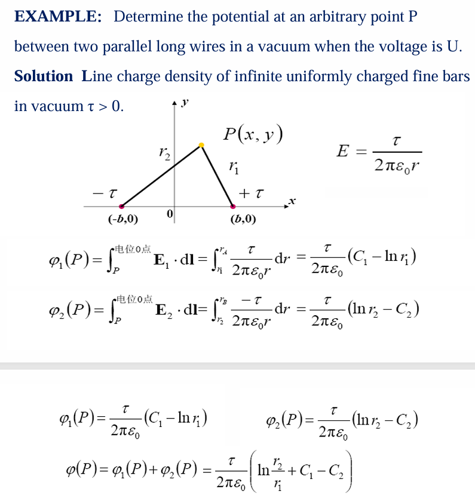
泊松方程
由于： $$ \nabla ·\vec E=\frac{\rho}{\varepsilon_0} $$
$$ \nabla ×\vec E=0 $$
且: $$ \mathbf{E} = -\nabla \varphi $$ 所以得到: $$ -\nabla ·(\nabla \phi)=\frac{\rho}{\varepsilon_0} $$ 左边$\nabla ·(\nabla \phi)$正是标量函数$\phi$的拉普拉斯算子，记作$\nabla ^2\phi$或者$\Delta \phi$,于是得到: $$ \nabla ^2\phi=-\frac{\rho}{\varepsilon_0} $$
- 注意，这里的$Delta$不是微小变量的意思，而是代指拉普拉斯算子，比如:
$$ \nabla^2 \frac{1}{|\mathbf{r} - \mathbf{r}’|} = -4\pi \delta(\mathbf{r} - \mathbf{r}’) $$
注意这个公式只在拉普拉斯算子作用于场点坐标$\mathbf{r}$或者源点坐标$\mathbf{r}’$时成立
电场线和等势面
电场线
也叫电力线，是描述电场分布的一种几何工具。曲线上每一点的切线方向都与该点的电场强度方向一致。
-
数学描述:
设$d\vec l=(dx,dy,dz)$为电力线上的一小段弧元，方向沿切线。由于电场线和电场平行，所以叉乘为0,电力线微分方程（叉积形式）： $$ \mathbf{E} \times d\mathbf{l} = 0 $$
直角坐标系下：
$$ \frac{E_x}{dx} = \frac{E_y}{dy} = \frac{E_z}{dz} $$
-
物理意义:
- 电力线从正电荷出发，终止于负电荷（或延伸到无穷远）。
- 电力线的疏密反映电场强度的大小：密度越大，场强越强。
- 在静电场中，电力线不闭合（因为无旋），且互不相交（除非场强为零的点）。
等势面
电势相等的点构成的面（在三维中）称为等势面，在二维中为等势线。数学上，等势面由 $$ \varphi(x, y, z) = C $$
给出，C为常数
电场与电势关系： $$ \mathbf{E} = -\nabla \varphi $$
- 性质:
- 等势面与电力线处处垂直。这是因为电场方向是电势降低最快的方向，与等势面的梯度方向一致，而梯度垂直于等势面。
- 等势面上移动电荷时，电场力不做功（因为电势差为零）。
- 等势面密集的地方电场强度大（对应电势变化快）。
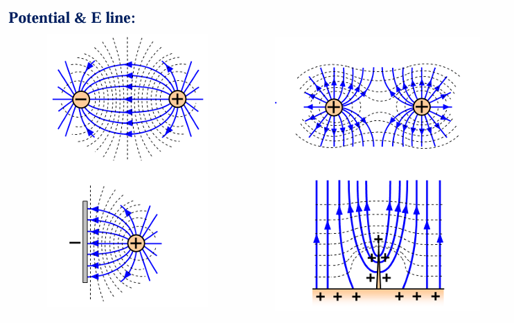
电偶极子 Electric Dipole
-
定义
-
电偶极子：由一对等量异号电荷 $+q$ 和 $-q$ 组成，相距很小距离 $d$（远小于场点到电荷的距离）。
-
偶极矩：方向从负电荷指向正电荷，大小 $p = qd$。
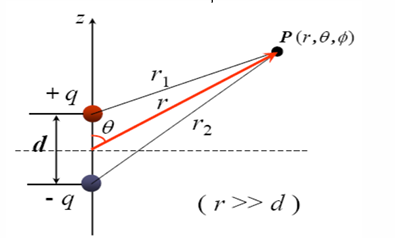
-
1. 电偶极子的电势（球坐标系）
精确表达式
对于由 $+q$ 和 $-q$ 构成、相距 $d$ 的电偶极子，空间任意点的电势为两个点电荷电势的代数和：
$$ \varphi_p = \frac{q}{4\pi\varepsilon_0} \left( \frac{1}{r_1} - \frac{1}{r_2} \right) $$
其中 $r_1$、$r_2$ 分别为场点到 $+q$ 和 $-q$ 的距离。
远场近似（$r \gg d$）
在球坐标系中，取偶极子中心为原点，偶极矩方向沿极轴（$\theta = 0$），则有：
$$ r_1 \approx r - \frac{d}{2}\cos\theta,\qquad r_2 \approx r + \frac{d}{2}\cos\theta $$
于是：
$$ \frac{1}{r_1} - \frac{1}{r_2} \approx \frac{r_2 - r_1}{r_1 r_2} \approx \frac{d\cos\theta}{r^2} $$
代入电势表达式得：
$$ \varphi_p = \frac{qd\cos\theta}{4\pi\varepsilon_0 r^2} $$
引入偶极矩矢量 $\mathbf{p} = q\mathbf{d}$（方向从 $-q$ 指向 $+q$），并注意到 $\mathbf{p}\cdot\mathbf{e}_r = p\cos\theta$，可得简洁形式：
$$ \boxed{\varphi_p = \frac{\mathbf{p}\cdot\mathbf{e}_r}{4\pi\varepsilon_0 r^2}} $$
2. 电偶极子的电场强度（矢量形式）
由电势求电场
电场强度等于电势的负梯度：
$$ \mathbf{E} = -\nabla \varphi $$
将电势表达式 $\varphi = \dfrac{1}{4\pi\varepsilon_0} \dfrac{\mathbf{p}\cdot\mathbf{r}}{r^3}$ 代入，利用矢量恒等式求梯度，得到：
$$ \boxed{\mathbf{E} = \frac{1}{4\pi\varepsilon_0 r^3} \left[ \frac{3(\mathbf{p}\cdot\mathbf{r})}{r^2} \mathbf{r} - \mathbf{p} \right]} $$
物理意义
- 第一项沿 $\mathbf{r}$ 方向，大小与 $1/r^3$ 成正比；
- 第二项与偶极矩方向相反；
- 电场随距离衰减比点电荷（$1/r^2$）更快，整体呈 $1/r^3$ 衰减。
3. 球坐标系下的电场分量
在球坐标系中，由于偶极子具有轴对称性（$\partial/\partial\varphi = 0$），电势只与 $r$ 和 $\theta$ 有关：
$$ \varphi_p = \frac{p\cos\theta}{4\pi\varepsilon_0 r^2} $$
电场分量为：
$$ E_r = -\frac{\partial \varphi}{\partial r} = \frac{2p\cos\theta}{4\pi\varepsilon_0 r^3} $$
$$ E_\theta = -\frac{1}{r}\frac{\partial \varphi}{\partial \theta} = \frac{p\sin\theta}{4\pi\varepsilon_0 r^3} $$
$$ E_\varphi = 0 $$
因此电场强度矢量可写为：
$$ \boxed{\mathbf{E} = \frac{p}{4\pi\varepsilon_0 r^3} \left( 2\cos\theta ,\mathbf{e}r + \sin\theta ,\mathbf{e}\theta \right)} $$
总结
| 物理量 | 表达式（远场近似） | 备注 |
|---|---|---|
| 电势 $\varphi$ | $\dfrac{\mathbf{p}\cdot\mathbf{e}_r}{4\pi\varepsilon_0 r^2}$ | 球坐标系下 $\varphi = \dfrac{p\cos\theta}{4\pi\varepsilon_0 r^2}$ |
| 电场 $\mathbf{E}$ | $\dfrac{1}{4\pi\varepsilon_0 r^3} \left[ \dfrac{3(\mathbf{p}\cdot\mathbf{r})}{r^2} \mathbf{r} - \mathbf{p} \right]$ | 矢量形式 |
| 球坐标分量 | $E_r = \dfrac{2p\cos\theta}{4\pi\varepsilon_0 r^3},\quad E_\theta = \dfrac{p\sin\theta}{4\pi\varepsilon_0 r^3}$ | $E_\varphi = 0$ |
这些公式是电偶极子辐射、极化介质等后续内容的重要基础，适用于 $r \gg d$ 的远场区域。
电偶极子在外电场中的受力与力矩
1. 偶极矩定义 $$ \mathbf{p} = q \mathbf{l} $$
2. 正、负电荷所受电场力 $$ \mathbf{F}+(P) = q,\mathbf{E}{\text{ex}}(P), \qquad \mathbf{F}-(Q) = -q,\mathbf{E}{\text{ex}}(Q) $$
3. 对偶极子中心的力矩（分别计算） $$ \mathbf{T}+(P) = \frac{1}{2},\mathbf{p} \times \mathbf{E}{\text{ex}}(P), \qquad \mathbf{T}-(Q) = \frac{1}{2},\mathbf{p} \times \mathbf{E}{\text{ex}}(Q) $$
4. 均匀外电场（$\mathbf{E}_{\text{ex}}$ 为常矢量）
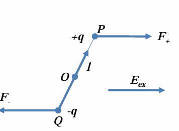
$$ \mathbf{F}_{\text{total}} = 0 $$
$$ \mathbf{T}{\text{total}} = \mathbf{T}+ + \mathbf{T}- = \mathbf{p} \times \mathbf{E}{\text{ex}} $$
5. 非均匀外电场中的合力（小偶极子近似） $$ \mathbf{F}{\text{total}} = (\mathbf{p} \cdot \nabla) \mathbf{E}{\text{ex}} $$ 总力矩仍近似为 $\mathbf{T}{\text{total}} \approx \mathbf{p} \times \mathbf{E}{\text{ex}}(\mathbf{r}_c)$，其中 $\mathbf{r}_c$ 为偶极子中心。
柱坐标
柱坐标系（Cylindrical Coordinates）是处理轴对称问题的利器，在静电学中尤其常用——沿 (z) 轴放置的无限长直线电荷、同轴电缆、圆柱形导体等，用柱坐标可以大幅简化计算。
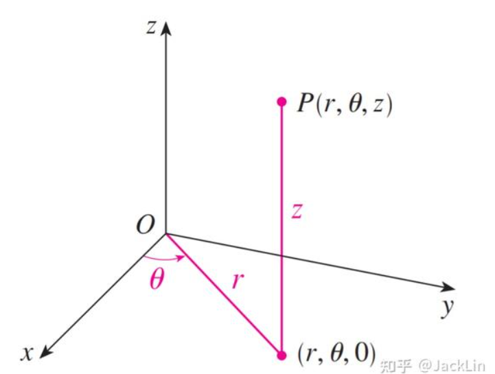
柱坐标的定义
柱坐标系用三个坐标 $(r, \phi, z)$ 描述空间一点 $P$：
- $r$：到 $z$ 轴的垂直距离（径向距离），$r \ge 0$。
- $\phi$：方位角，从 $x$ 轴正向逆时针旋转到 $OP$ 在 $xy$ 平面投影的角度，$0 \le \phi < 2\pi$（或 $-\pi < \phi \le \pi$）。
- $z$：与直角坐标系的 $z$ 相同。
与直角坐标 $(x, y, z)$ 的关系：
$$ \begin{cases} x = r \cos\phi, \ y = r \sin\phi, \ z = z. \end{cases} \quad\Rightarrow\quad \begin{cases} r = \sqrt{x^2 + y^2}, \ \phi = \arctan(y/x) \ (\text{需考虑象限}), \ z = z. \end{cases} $$
基向量与线元
柱坐标有三个相互正交的单位基向量：
- $\hat{\mathbf{r}}$：径向向外，垂直于 $z$ 轴。
- $\hat{\boldsymbol{\phi}}$：方位角增加的方向，与 $\hat{\mathbf{r}}$ 垂直，也在 $xy$ 平面内。
- $\hat{\mathbf{z}}$：沿 $z$ 轴方向。
它们满足右手系：$\hat{\mathbf{r}} \times \hat{\boldsymbol{\phi}} = \hat{\mathbf{z}}$。
重要：$\hat{\mathbf{r}}$ 和 $\hat{\boldsymbol{\phi}}$ 的方向依赖于位置（随 $\phi$ 变化），而 $\hat{\mathbf{z}}$ 是常矢量。
空间一点的位移微元（线元）为：
$$ d\mathbf{l} = dr,\hat{\mathbf{r}} + r,d\phi,\hat{\boldsymbol{\phi}} + dz,\hat{\mathbf{z}} $$
面积元（三种常见曲面）：
- $r = \text{常数}$ 的柱面：$dS = r,d\phi,dz$
- $\phi = \text{常数}$ 的平面：$dS = dr,dz$
- $z = \text{常数}$ 的平面：$dS = r,dr,d\phi$
体积元：
$$ dV = r,dr,d\phi,dz $$
梯度、散度、旋度、拉普拉斯
在柱坐标下，这些微分算子的表达式如下（$f$ 为标量函数，$\mathbf{A} = A_r \hat{\mathbf{r}} + A_\phi \hat{\boldsymbol{\phi}} + A_z \hat{\mathbf{z}}$）：
- 梯度：
$$ \nabla f = \frac{\partial f}{\partial r},\hat{\mathbf{r}} + \frac{1}{r}\frac{\partial f}{\partial \phi},\hat{\boldsymbol{\phi}} + \frac{\partial f}{\partial z},\hat{\mathbf{z}} $$
- 散度：
$$ \nabla \cdot \mathbf{A} = \frac{1}{r}\frac{\partial}{\partial r}(r A_r) + \frac{1}{r}\frac{\partial A_\phi}{\partial \phi} + \frac{\partial A_z}{\partial z} $$
- 旋度：
$$ \nabla \times \mathbf{A} = \left( \frac{1}{r}\frac{\partial A_z}{\partial \phi} - \frac{\partial A_\phi}{\partial z} \right)\hat{\mathbf{r}} + \left( \frac{\partial A_r}{\partial z} - \frac{\partial A_z}{\partial r} \right)\hat{\boldsymbol{\phi}} + \frac{1}{r}\left( \frac{\partial}{\partial r}(r A_\phi) - \frac{\partial A_r}{\partial \phi} \right)\hat{\mathbf{z}} $$
- 标量拉普拉斯：
$$ \nabla^2 f = \frac{1}{r}\frac{\partial}{\partial r}\left( r \frac{\partial f}{\partial r} \right) + \frac{1}{r^2}\frac{\partial^2 f}{\partial \phi^2} + \frac{\partial^2 f}{\partial z^2} $$
在轴对称电场中的应用
当电荷分布绕 $z$ 轴旋转对称时（如无限长直线电荷、均匀带电圆环、圆柱面等），电场 $\mathbf{E}$ 与 $\phi$ 无关（$\partial/\partial \phi = 0$），且 $\hat{\boldsymbol{\phi}}$ 方向的分量也为零（因为对称性不允许切向电场）。此时电场只有 $E_r(r,z)$ 和 $E_z(r,z)$ 两个分量，并且可以由电势 $\varphi(r,z)$ 通过梯度得到：
$$ \mathbf{E} = -\nabla \varphi = -\frac{\partial \varphi}{\partial r},\hat{\mathbf{r}} - \frac{\partial \varphi}{\partial z},\hat{\mathbf{z}} $$
例如，无限长均匀带电直线（线密度 $\tau$）的电场：
- 由高斯定理易得 $E_r = \frac{\tau}{2\pi\varepsilon_0 r}$，$E_z = 0$。
- 电势（取 $r_0$ 处为零）为 $\varphi(r) = -\frac{\tau}{2\pi\varepsilon_0}\ln\frac{r}{r_0}$。
在柱坐标下，拉普拉斯方程在轴对称（$\partial/\partial\phi = 0$）时简化为：
$$ \frac{1}{r}\frac{\partial}{\partial r}\left( r \frac{\partial \varphi}{\partial r} \right) + \frac{\partial^2 \varphi}{\partial z^2} = 0 $$
这是求解柱形边界静电问题的基础方程
静电场中的导体与电介质
Conductors and dielectrics in electrostatic fields
导体在静电场中
-
导体内部净电荷为0
在静电平衡时，导体内部的自由电子不再发生宏观移动，但如果有净电荷，就会产生电场推动电子移动
-
导体内部电场强度为0
原因同上，如果内部有电场，自由电子会发生移动。实际上，静电平衡的定义就是导体内部电场强度为0
-
导体是等势体，表面是等势面
因为导体内部电场强度为0，所以任意两点电势差为0，整个导体是等势体，表面也是等势面
-
导体表面电场强度垂直于表面
由于上一条说明导体是等势体，表面是等势面，所以电场线(电场强度)垂直于等势面
-
根据高斯定理: $$ \vec E=\frac{\sigma}{\epsilon_0} $$
- 其中$\sigma$是表面电荷密度，方向垂直于表面向外
电介质(dielectrics)极化的基本概念 Polarization
电介质（绝缘体）内部没有自由电荷，但存在原子、分子或离子。当施加外电场 $\mathbf{E}$ 时，电介质中的正负电荷中心会发生相对位移，或者本来具有固有电偶极矩的分子会沿电场方向取向，从而在宏观上表现出电偶极矩——这种现象称为极化。
极化的结果是：
- 电介质内部和表面出现极化电荷 polarized charges（也称束缚电荷）；
- 极化电荷本身也会激发电场，叠加在外电场上，改变总电场分布；
- 从场的角度看，极化电荷与自由电荷一样，都是电场的源。
各种介电常数
真空介电常数/ 真空电容率 vacuum permittivity / permittivity of free space
- 符号:$\varepsilon_0$
- 数值:$8.854 \times 10^{-12} , \text{F/m}$
- 含义：表征真空容纳电场的能力，是电磁学基本常数。
相对介电常数 / 相对电容率 relative permittivity / dielectric constant
-
符号:$\varepsilon_r$有时也用$k$或$\kappa$
-
关系 $$ \varepsilon_r = \frac{\varepsilon}{\varepsilon_0} $$
-
含义：介质相对于真空的极化能力，也是介质降低电场强度的倍数
介电常数 / 绝对介电常数 / 电容率 permittivity
-
符号:$\varepsilon$
-
关系: $$ \varepsilon = \varepsilon_r \varepsilon_0 $$
-
含义：介质本身对电场的响应能力，出现在高斯定律$\mathbf{D} = \varepsilon \mathbf{E}$中
极化强度矢量 $\mathbf{P}$ Polarization Vector
为了定量描述电介质的极化程度，引入极化强度 $\mathbf{P}$，定义为：
$$ \mathbf{P} = \lim_{\Delta V \to 0} \frac{\sum_{i=1}^{N} \mathbf{p}_i}{\Delta V} $$
其中 $\Delta V$ 是一个宏观小、微观大的体积元，$\mathbf{p}_i$ 是该体积内第 $i$ 个分子的电偶极矩，$N$ 为体积内的分子数。$\mathbf{P}$ 的单位是 $\mathrm{C/m^2}$，与面电荷密度量纲相同。
物理意义：$\mathbf{P}$ 表示单位体积内的电偶极矩总和，反映了介质极化的强弱和方向。在外电场不太强时，对于各向同性介质，有 $\mathbf{P} = \varepsilon_0 \chi_e \mathbf{E}$，其中 $\chi_e$ 是电极化率。
极化机制的详细说明
电介质极化可分为四种主要机制，它们的微观起源不同，响应速度也各异。
电子位移极化
- 机理：外电场作用下，原子中的电子云相对于原子核发生微小位移，产生感应偶极矩。
- 特点：几乎存在于所有电介质中；响应极快（约 $10^{-15},\mathrm{s}$），与光频电磁场匹配；极化强度与电场呈线性关系（弹性位移）。
- 温度依赖性：几乎与温度无关。
离子位移极化
- 机理：在离子晶体（如 $\mathrm{NaCl}$）中，正、负离子在外电场作用下发生相对位移，形成感应偶极矩。
- 特点：只存在于离子型介质中；响应速度比电子极化慢（约 $10^{-13},\mathrm{s}$，对应红外频率）；也呈线性关系。
- 温度影响：由于离子间结合力随温度变化较小，极化率随温度变化不大。
取向极化（偶极子转向极化）
- 机理：对于具有固有电偶极矩的极性分子（如 $\mathrm{H_2O}$），无外场时偶极矩方向杂乱无章，宏观上不显示极性；外电场使偶极矩转向电场方向，产生宏观极化。
- 特点：只在极性电介质中出现；响应较慢（约 $10^{-10},\mathrm{s}$，对应微波频段）；温度升高时热运动阻碍取向，极化强度减小（服从居里-外斯定律）；极化强度与电场关系在弱场下为线性，强场下可能出现饱和。
- 公式：在经典统计下，取向极化强度可表示为 $\mathbf{P} = \frac{N p^2}{3 k T} \mathbf{E}$（弱场近似）。
界面极化（空间电荷极化）
- 机理：在非均匀介质（如多相材料、掺杂介质）中，自由电荷（离子、电子）在电场作用下迁移，并在不同介质的界面处积累，形成宏观偶极矩。
- 特点：主要存在于复合材料、陶瓷、聚合物等；响应非常慢（从 $10^{-2},\mathrm{s}$ 到数小时，甚至低频或直流）；与材料的缺陷、杂质、界面密切相关；通常只在低频下显著，高频下消失。
- 工程意义：在高压绝缘、电容器等领域需要考虑。
极化电荷（束缚电荷）
这一部分的推导有些繁琐，证明过程就不写了(实际上是因为Lyy真的不想敲这一大坨，所以跳过了)
我们的主要目的是求出极化电介质对某一点的电场强度以及电势
最后的结论是:
电介质极化后产生的电场和电势，可以直接由这两个束缚电荷量来计算
- 体束缚电荷密度
- 面束缚电荷密度
极化的直接结果是介质内部和表面出现极化电荷。这些电荷不能自由移动，但能激发电场。
体束缚电荷密度 $\rho_p$
$$ \rho_p = -\nabla \cdot \mathbf{P} $$
当 $\mathbf{P}$ 不均匀时，介质内部会出现净束缚电荷。
面束缚电荷密度 $\sigma_p$
在介质与真空或另一种介质的界面上，若 $\mathbf{P}$ 的法向分量不连续，则出现面束缚电荷：
$$ \sigma_p = \mathbf{P} \cdot \mathbf{n} $$
其中 $\mathbf{n}$ 为介质表面的外法向单位矢量（从介质指向外部）。特别地，对于均匀极化介质，内部 $\nabla \cdot \mathbf{P}=0$，仅表面有束缚电荷。
它们在真空中产生的电势为：
$$ \phi_{\text{polarization}}(\mathbf{r}) = \frac{1}{4\pi\varepsilon_0} \int_{V’} \frac{\rho_b(\mathbf{r}’)}{R} dV’ + \frac{1}{4\pi\varepsilon_0} \oint_{S’} \frac{\sigma_b(\mathbf{r}’)}{R} dS' $$
电场强度则为该电势的负梯度
补充说明
-
总电场 = 自由电荷产生的电场 + 束缚电荷产生的电场。 束缚电荷就是由极化引起的“等效”电荷分布，它们与自由电荷一样遵守库仑定律。
-
所以，一旦求出 $\rho_b$ 和 $\sigma_b$，就可以完全代替极化强度 $\mathbf{P}$ 来计算极化贡献的电场和电势，而无需再直接处理 $\mathbf{P}$ 的复杂分布。
-
但注意：$\rho_b$和 $\sigma_b$ 本身又依赖于 $\mathbf{P}$，而 $\mathbf{P}$ 通常又与总电场有关（通过介质的极化率）。因此在实际问题中，需要结合自由电荷分布和介质方程（例如 $\mathbf{P} = \varepsilon_0 \chi_e \mathbf{E}$联立求解。)
静电场中的电介质方程组
考虑极化电荷后，电场的总源包括自由电荷 $\rho_f$ 和束缚电荷 $\rho_p$(这里只考虑体束缚电荷密度，面的在边界条件中体现)：
$$ \nabla \cdot \mathbf{E} = \frac{\rho_f + \rho_p}{\varepsilon_0} $$
将 $\rho_p = -\nabla \cdot \mathbf{P}$ 代入，得：
$$ \nabla \cdot (\varepsilon_0 \mathbf{E} + \mathbf{P}) = \rho_f $$
定义电位移矢量 $\mathbf{D} = \varepsilon_0 \mathbf{E} + \mathbf{P}$，则高斯定理简化为：
$$ \nabla \cdot \mathbf{D} = \rho_f $$
对于线性各向同性介质，$\mathbf{P} = \varepsilon_0 \chi_e \mathbf{E}$，于是 $\mathbf{D} = \varepsilon_0 (1+\chi_e) \mathbf{E} = \varepsilon \mathbf{E}$，其中 $\varepsilon = \varepsilon_0 \varepsilon_r$ 为介电常数，$\varepsilon_r = 1+\chi_e$ 为相对介电常数。
总结
| 极化机制 | 微观过程 | 响应时间 | 频率范围 | 温度依赖性 |
|---|---|---|---|---|
| 电子位移极化 | 电子云偏移 | $10^{-15},\mathrm{s}$ | 光频 | 弱 |
| 离子位移极化 | 离子相对位移 | $10^{-13},\mathrm{s}$ | 红外 | 弱 |
| 取向极化 | 固有偶极子转向 | $10^{-10},\mathrm{s}$ | 微波 | 强（反比于 $T$） |
| 界面极化 | 电荷在界面积累 | 慢（$10^{-2},\mathrm{s}$ 以上） | 低频/直流 | 复杂 |
极化强度 $\mathbf{P}$ 是连接微观极化与宏观电磁场的关键物理量，通过它可以将极化电荷纳入麦克斯韦方程组，从而统一处理自由电荷和束缚电荷产生的电场
静电场基本定理、微分方程与边值问题
Electrostatic field theorem, Differential equations and boundary value problems
静电场基本定理
静电场的两个基本特性：无旋性（电场线不闭合，不做环流）和有源性（电荷是电场的源）
微分形式（描述每一点的特性）
$$ \begin{cases} \nabla \times \mathbf{E} = 0 \quad & \text{（静电场无旋）}\ \nabla \cdot \mathbf{D} = \rho \quad & \text{（电位移矢量的散度等于自由电荷体密度）} \end{cases} $$
- $\nabla \times \mathbf{E} = 0$：静电场是保守场，电场力做功与路径无关，可以引入电势 $\varphi$使得 $\mathbf{E} = -\nabla \varphi$。
- **$\nabla \cdot \mathbf{D} = \rho$：**电位移矢量 $\mathbf{D}$ 的源是自由电荷 $\rho$。注意这里 $\mathbf{D}$ 不是真空电场 $\varepsilon_0\mathbf{E}$，而是包含了介质极化效应的总响应。
积分形式（描述宏观整体特性）
$$ \begin{cases} \oint_l \mathbf{E} \cdot d\mathbf{l} = 0 \quad & \text{（电场环流为零）}\ \oint_S \mathbf{D} \cdot d\mathbf{S} = q \quad & \text{（通过闭合面的电位移通量等于面内自由电荷总量）} \end{cases} $$
- 第一个方程：沿任意闭合路径，静电场做功为零 → 电势的单值性成立。
- 第二个方程：高斯定律的介质版本，自由电荷 $q$ 是 $\mathbf{D}$的通量源。
$\mathbf{D}$ 与 $\mathbf{E}$
-
一般形式： $$ \mathbf{D} = \varepsilon_0 \mathbf{E} + \mathbf{P} $$
其中$\mathbf{P}$ 是极化强度（介质被极化产生的偶极矩密度）。$\varepsilon_0\mathbf{E}$ 是真空贡献，$\mathbf{P}$ 是介质响应。
-
线性各向同性介质：$\mathbf{D} = \varepsilon \mathbf{E}$，$\varepsilon = \varepsilon_0 \varepsilon_r$，$\varepsilon_r$ 为相对介电常数。
边值问题 Boundary Value Problem
边值问题 = 微分方程（泊松或拉普拉斯） + 边界条件 + 自然边界条件（无穷远）。
微分方程汇总
静电场边值问题的核心是求解电势 $\varphi$ 满足的偏微分方程：
- 泊松方程：$\nabla^2 \varphi = -\rho / \varepsilon$（有自由电荷的区域）
- 拉普拉斯方程：$\nabla^2 \varphi = 0$（无自由电荷的区域）
方程适用于线性、各向同性、均匀介质。
边界条件汇总
求解微分方程时，需要在介质分界面或区域边界上附加条件，原因如下:
泊松方程（$\nabla^2 \varphi = -\rho/\varepsilon$）和拉普拉斯方程（$\nabla^2 \varphi = 0$）都是偏微分方程。它们的通解包含待定常数或函数。边界条件用于确定这些待定量，从而得到唯一的电势分布
分界面条件（两种介质交界处）：
- 电势连续：$\varphi_1 = \varphi_2$
- 电位移法向分量跃变：$\varepsilon_1 \frac{\partial \varphi_1}{\partial n} - \varepsilon_2 \frac{\partial \varphi_2}{\partial n} = \sigma$ 其中 $\sigma$ 是界面上的自由面电荷密度。若 $\sigma=0$，则 $\varepsilon_1 \frac{\partial \varphi_1}{\partial n} = \varepsilon_2 \frac{\partial \varphi_2}{\partial n}$。
| 物理量 | 分量 | 边界条件（关系式） | 连续与否 |
|---|---|---|---|
| 电势 $\varphi$ | 标量 | $\varphi_1 = \varphi_2$ | 连续 |
| 电势的法向导数 $\frac{\partial \varphi}{\partial n}$ | 法向 | $\varepsilon_1 \frac{\partial \varphi_1}{\partial n} - \varepsilon_2 \frac{\partial \varphi_2}{\partial n} = \sigma$ （注意 $\frac{\partial \varphi}{\partial n} = -E_n$） |
一般不连续 仅当 $\sigma=0$ 且 $\varepsilon_1=\varepsilon_2$ 时连续 |
| 电场强度 $\mathbf{E}$ | 切向 $E_t$ | $E_{1t} = E_{2t}$ | 连续 |
| 法向 $E_n$ | $\varepsilon_2 E_{2n} - \varepsilon_1 E_{1n} = \sigma$ | 一般不连续 仅当 $\sigma=0$ 且 $\varepsilon_1=\varepsilon_2$ 时连续 |
|
| 电位移 $\mathbf{D}$ | 切向 $D_t$ | $\frac{D_{1t}}{\varepsilon_1} = \frac{D_{2t}}{\varepsilon_2}$（由 $E_t$ 连续导出） | 一般不连续 仅当 $\varepsilon_1=\varepsilon_2$ 时连续 |
| 法向 $D_n$ | $D_{2n} - D_{1n} = \sigma$ | 当 $\sigma=0$ 时连续，否则不连续 |
自然边界条件
通常指无穷远处的条件。对于有限大小的带电体系，电势在无穷远处趋于零，但更精确的要求是： $$ \lim_{r\to\infty} r\varphi = \text{有限值} $$ 这保证了电势的行为像点电荷势（$1/r$）或偶极子势（$1/r^2$）等，不会发散
**电位移矢量 $\mathbf{D}$**在两种介质分界面上的法向分量边界条件
在两种不同介质（例如空气和玻璃）的分界面上，取一个非常扁的圆柱形高斯面（俗称“药盒”），它的上下底面分别位于界面两侧，且与界面平行。柱高 $\Delta l \to 0$，所以侧面的通量可以忽略。
推导过程
高斯定律的积分形式为： $$ \oint_S \mathbf{D} \cdot d\mathbf{S} = q_{\text{free}} $$ 其中 $q_{\text{free}}$ 是高斯面内包围的自由电荷（不是极化电荷）。
- 设界面法向单位矢量 $\mathbf{e}_n$ 从介质1指向介质2。
- 上底面的外法向与 $\mathbf{e}n$ 相同，通量为 $D{2n} \Delta S$。
- 下底面的外法向与 $\mathbf{e}n$ 相反，通量为 $D{1n} (-\Delta S) = -D_{1n} \Delta S$。
- 侧面高度趋于0，通量为0。
因此高斯面的总通量为： $$ \oint \mathbf{D} \cdot d\mathbf{S} = -D_{1n} \Delta S + D_{2n} \Delta S $$
高斯面内可能存在的自由电荷只可能分布在界面上（因为体积趋于0），若界面上的自由面电荷密度为 $\sigma$，则： $$ q_{\text{free}} = \sigma \Delta S $$ 代入高斯定律： $$ (-D_{1n} + D_{2n}) \Delta S = \sigma \Delta S $$ 约去 $\Delta S$，得： $$ D_{2n} - D_{1n} = \sigma $$ 用矢量形式写为： $$ \mathbf{e}_n \cdot (\mathbf{D}_2 - \mathbf{D}_1) = \sigma $$
结论解读
-
当 $\sigma \neq 0$（界面存在自由电荷）时，$\mathbf{D}$ 的法向分量不连续，跳跃值等于自由面电荷密度。
-
当 $\sigma = 0$（无自由面电荷，最常见情况）时，$\mathbf{D}$ 的法向分量连续：$D_{1n} = D_{2n}$
-
$\sigma$ 是自由电荷密度，不包括极化电荷。极化电荷对 $\mathbf{D}$的法向连续性没有直接影响，它们的影响已经包含在 $\mathbf{D}$ 的定义中$\mathbf{D} = \varepsilon_0 \mathbf{E} + \mathbf{P}$
静电场中电介质分界面上电场强度的切向分量连续
在两种不同介质（比如空气和玻璃、水和油）的分界面两侧，电场强度 $ \mathbf{E} $ 一般会发生变化。但它的切向分量（平行于界面的分量）有一个确定的边界条件： $$ E_{1t} = E_{2t} $$ 即:电场强度E切向分量在穿过界面时是连续的
推导
-
取界面上的一个很小的矩形回路，两条长边$\Delta l_1$分别位于介质1和介质2中，且紧贴界面；两条短边$\Delta l_2$垂直穿过界面，并令$\Delta l_2 \to 0$（这样短边上的积分贡献可以忽略）
-
在静电场中，电场强度沿任意闭合回路的线积分为零 $$ \oint \mathbf{E} \cdot d\mathbf{l} = 0 $$
-
对这个小矩形回路积分：
- 在介质1中，沿长边方向积分得到 $ E_{1t} ,\Delta l_1 $（注意方向）
- 在介质2中，沿长边反方向积分得到 $- E_{2t} ,\Delta l_1 $
- 短边贡献 $\to 0$
-
于是: $$ E_{1t} \Delta l_1 - E_{2t} \Delta l_1 = 0 \quad\Rightarrow\quad E_{1t} = E_{2t} $$
矢量形式
用界面的单位法向量 $\mathbf{e}_n $（从介质1指向介质2）来表示这个连续条件: $$ \mathbf{e}_n \times (\mathbf{E}_2 - \mathbf{E}_1) = \mathbf{0} $$ 它的意思是：$\mathbf{E}_2 - \mathbf{E}_1$ 没有切向分量，即切向分量相同。因为两个矢量叉乘 $\mathbf{e}_n$ 为零，说明这两个矢量在切向上是相等的
适用条件与意义
- 该结论对静电场严格成立，因为静电场是保守场（环路积分为零）。
- 在时变电磁场中，如果考虑感应电动势，该条件依然成立（更一般的推导来自法拉第定律，只要磁场变化有限且回路趋近于零，切向电场仍连续）。
- 这个边界条件与法向电位移矢量连续（无自由电荷时）一起，构成了求解不同介质中电场分布的基本衔接条件。
电场线的“弯折”只会发生在法向分量上，切向分量必须平滑地跨过界面。
也就是说，电场强度在界面切线方向上是相等的，但是在法线上是不相等的
电介质分界面上电势的边界条件
电势在介质分界面上连续 $$ \psi_1-\psi_2=\int_1^2\mathbf{E}·d\mathbf{l} $$ 当两点无限靠近交界面时，即使$\mathbf{E}$在界面处有一个有限大小的跳跃(比如此处从$\mathbf{E_1}$跳到了$\mathbf{E_2}$），在积分路径的长度趋于0的情况下，积分结果也趋于0，所以: $$ \psi_1=\psi_2 $$
电势的法向导数一般不连续: $$ 因为:D_{2n}-D_{1n}=\sigma\ 带入电势表达式:-\epsilon_2\frac{\partial \psi_2}{\partial \psi_n}+\epsilon_1\frac{\partial \psi_1}{\partial_n}=\sigma\ 即:\epsilon_1\frac{\partial \psi_1}{\partial_n}-\epsilon_2\frac{\partial \psi_2}{\partial \psi_n}=\sigma\ $$ 从这个式子可以推出，在界面自由电荷为0且$\epsilon$不相等的情况下，电势的法向导数不连续
泊松方程、拉普拉斯方程
总结如下：
-
泊松方程：$\nabla^2 \varphi = -\dfrac{\rho}{\varepsilon}$ 适用于静电场中存在自由电荷分布的情况。
-
拉普拉斯方程：$\nabla^2 \varphi = 0$ 是泊松方程在无自由电荷区域（$\rho = 0$）的特例。
-
拉普拉斯算子：$\nabla^2 = \dfrac{\partial^2}{\partial x^2} + \dfrac{\partial^2}{\partial y^2} + \dfrac{\partial^2}{\partial z^2}$（直角坐标系）
-
适用条件：两个方程仅适用于各向同性、线性、均匀介质。
-
$\varphi$ 表示空间每一点的电势值，即 $\varphi = \varphi(x,y,z)$ 或 $\varphi(r,\theta,\phi)$。
-
$\rho$ 也是空间每一点的自由电荷密度。
-
方程描述的是每一点处电势的二阶空间导数（拉普拉斯算子）与该点电荷密度之间的瞬时关系。
所以，泊松方程是一个偏微分方程，它的解 $\varphi$ 在整个定义域内给出电势的空间分布，而不是仅仅一个点的值。
- 典型例子：
- 均匀带电球体内部的电势。
- 平行板电容器两极板之间（如果有电荷分布，例如注入的电荷云）。
- 半导体器件中耗尽区的电势分布。
推导过程
静电场基本方程： $$ \nabla \times \mathbf{E} = 0 $$
$$ \nabla \cdot \mathbf{D} = \rho $$
由 $\nabla \times \mathbf{E} = 0$ 可引入电势 $\varphi$
向量微积分中的一个基本定理：如果一个向量场的旋度处处为零，那么它可以表示为某个标量函数的梯度（在单连通区域内）： $$ \mathbf{E} = -\nabla \varphi $$ 对于线性、各向同性、均匀介质：
$$ \mathbf{D} = \varepsilon \mathbf{E} = -\varepsilon \nabla \varphi $$
代入 $\nabla \cdot \mathbf{D} = \rho$：
$$ \nabla \cdot (-\varepsilon \nabla \varphi) = \rho $$
$$ -\varepsilon \nabla^2 \varphi = \rho $$
因此：
$$ \nabla^2 \varphi = -\frac{\rho}{\varepsilon} $$
这就是泊松方程。
若在无自由电荷区域 $\rho = 0$，则： $$ \nabla^2 \varphi = 0 $$
这就是拉普拉斯方程。
三类边值问题
根据边界上给出的信息类型，分为三类：
| 类型 | 边界上给出的条件 | 物理含义 |
|---|---|---|
| 第一类（狄利克雷条件） | $\varphi | _s = f_1(s)$ |
| 第二类（诺伊曼条件） | $\frac{\partial \varphi}{\partial n} | _s = f_2(s)$ |
| 第三类（混合/罗宾条件） | $(\varphi + \beta \frac{\partial \varphi}{\partial n}) | _s = f_3(s)$ |
其中：
- $\varphi$ 是电势
- $\frac{\partial \varphi}{\partial n}$ 表示沿边界外法线方向的方向导数
- $\beta$ 是一个已知常数
- $f_1(s)$、$f_2(s)$、$f_3(s)$ 是边界上给定的已知函数
-
狄利克雷条件
边界上给出的是电势的具体数值。
- 数学表达：$\varphi|_s = f_1(s)$
- 物理例子：一个金属导体球，用导线连接到电池，使其电势保持 $10\ \mathrm{V}$。那么球面上所有点的电势 $\varphi = 10\ \mathrm{V}$ 已知。
- 另一例子：一个长方形容器，左壁电势 $0\ \mathrm{V}$，右壁电势 $5\ \mathrm{V}$，其他壁电势 $0\ \mathrm{V}$。
- 意义：知道边界上的电势（由电源或导体固定），再结合内部电荷分布，内部电势分布就被唯一确定。
-
诺伊曼条件
边界上给出的是电势的法向导数。
- 数学表达：$\frac{\partial \varphi}{\partial n}\bigg|_s = f_2(s)$
- 物理含义：法向导数 $\frac{\partial \varphi}{\partial n}$ 与电场强度的法向分量有关系：$E_n = -\frac{\partial \varphi}{\partial n}$。所以知道 $\frac{\partial \varphi}{\partial n}$ 等价于知道边界上的电场法向分量。
- 进一步联系：由 $D_n = \varepsilon E_n$，以及边界上的自由面电荷密度 $\sigma = D_{2n} - D_{1n}$，如果边界一侧是真空或导体（内部场为零），则 $\sigma = \varepsilon \frac{\partial \varphi}{\partial n}$（注意符号取决于法向方向）。因此第二类条件通常对应已知的面电荷分布。
- 例子：一个带电导体平板，面电荷密度 $\sigma$ 已知，则板表面外侧的电势法向导数为 $\frac{\partial \varphi}{\partial n} = -\frac{\sigma}{\varepsilon}$（设外法线指向板外）。
-
混合条件\罗宾条件
边界上给出的是电势与法向导数的线性组合。
- 数学表达：$\left(\varphi + \beta \frac{\partial \varphi}{\partial n}\right)\bigg|_s = f_3(s)$
- 物理含义：这类条件出现在一些特殊问题中，例如：
- 热传导中的对流换热边界条件（温度与热流密度的组合）。
- 静电学中，如果边界不是理想导体，而是有表面电阻或接触电势时，可能出现这种混合条件。
- 某些电磁场问题中，边界同时约束了电势和它的导数。
- 当 $\beta = 0$ 时退化为第一类条件；当 $\beta \to \infty$ 且 $f_3/\beta$ 有限时退化为第二类条件。
电介质分界面上电场线的折射定律
当两种介质的界面上没有自由电荷（σ = 0）时，电场强度和电位移矢量满足两个连续条件：
-
电位移的法向分量连续 $D_{1n} = D_{2n}$ 因为 $D = \varepsilon E$，且法向分量可写成 $E \cos\theta$（$\theta$ 是电场线与法线的夹角），所以： $\varepsilon_1 E_1 \cos\alpha_1 = \varepsilon_2 E_2 \cos\alpha_2$ 这里 $\alpha$ 是电场线与法线的夹角（图中通常用 $\alpha$ 表示）。
-
电场强度的切向分量连续 $E_{1t} = E_{2t}$ 切向分量可写成 $E \sin\theta$，因此： $E_1 \sin\alpha_1 = E_2 \sin\alpha_2$
将上面两个等式相除（第二式除以第一式），可以得到：
$$ \frac{\sin\alpha_1}{\cos\alpha_1} \cdot \frac{\cos\alpha_2}{\sin\alpha_2} = \frac{\varepsilon_2}{\varepsilon_1} $$
即 $$ \frac{\tan\alpha_1}{\tan\alpha_2} = \frac{\varepsilon_1}{\varepsilon_2} $$
这就是电场线的折射定律。它表明：当电场线从一个介质进入另一个介质时，其方向会发生偏折，偏折的程度由两种介质的介电常数之比决定。
- 光线的折射定律（斯涅耳定律）为：
$$ \frac{\sin\theta_1}{\sin\theta_2} = \frac{n_2}{n_1} $$
其中 $n$ 是折射率。而电场线的折射定律涉及的是正切值之比，且比值是 $\varepsilon_1/\varepsilon_2$。这是因为电场线在界面处同时满足法向和切向条件，而光线满足的是相位匹配条件，两者数学形式不同
唯一性定理 Uniqueness Theorem of Electrostatic Field Solution
-
定义:
在静电场中，给定一个区域内的自由电荷分布（即已知 $\rho$），并且给定整个边界上的边界条件（第一类、第二类或第三类中的一种），那么泊松方程 $\nabla^2 \varphi = -\rho/\varepsilon$ 或拉普拉斯方程 $\nabla^2 \varphi = 0$ 的解 $\varphi$ 是唯一的。
唯一性定理告诉我们：只要这个解满足了方程和边界条件，它就一定是唯一的那个真解，不需要再去寻找其他解.
- 注意事项:
- 唯一性定理成立的前提是介质为线性、各向同性、均匀（或者至少分段均匀，且边界条件给在全部边界上）。
- 如果区域延伸到无穷远，需要加上自然边界条件（如 $\varphi \to 0$ 或 $\lim_{r\to\infty} r\varphi$ 有限），否则解可能不唯一（例如加上一个常数仍满足拉普拉斯方程，但若无穷远电势固定，常数就被确定了）。
- 证明:略(lyy写不动了，实际上唯一性定理的最大作用在于告诉我们不用考虑其他解，因为这个解是唯一的情况)
静电场的间接解法
Indirect solution of electrostatic field
镜像法 Method of Images
- 用虚拟的像电荷来代替介质分界面上复杂分布的真实电荷，从而简化计算。
- 这个虚拟电荷通常放在界面的镜像位置（就像平面镜成像一样），所以叫“镜像法”
情况一：接地金属球（电势固定为 0）
| 项目 | 内容 |
|---|---|
| 边界条件 | $\varphi |
| 总感应电荷 | $Q_{\text{ind}} = -\frac{R}{d}q \neq 0$（从大地流入电荷） |
| 镜像电荷数量 | 1 个 |
| 镜像电荷位置 | 球内距球心 $b = R^2/d$ 处（真实电荷 $q$ 的同侧） |
| 镜像电荷大小 | $q’ = -\frac{R}{d}q$ |
| 电势表达式 | $\varphi = \frac{1}{4\pi\varepsilon_0}\left( \frac{q}{r} - \frac{R/d \cdot q}{r_1} \right)$ （$r$：到真实电荷；$r_1$：到镜像电荷） |
| 物理图像 | 球面感应电荷全为与 $q$ 异号的电荷，由大地提供或带走 |
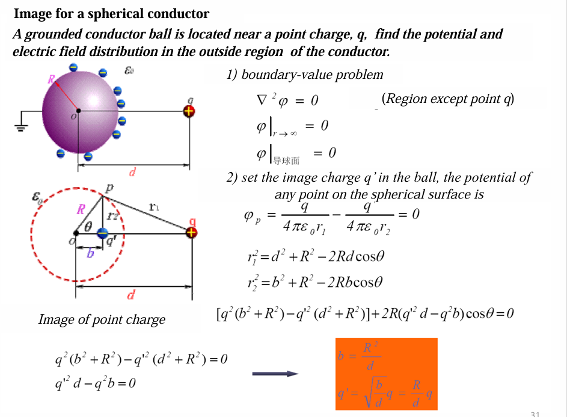
原理是，讲原来的接地替代成球壳内有一个点电荷，然后这个点电荷满足边界条件，即:
-
球壳的电势为0
其中这一个是通过图上2)这部分求出来的，运用了余弦公式(如果我没记错叫这个的话)
-
如果你忘了也没关系😀
之要记得有这样一个点在球心和球外电荷连线上就行，然后用最简单的两个点(所连直线和球体相交的两个点)列方程就行
情况二：不接地、总电荷为零的金属球（孤立中性球）
| 项目 | 内容 |
|---|---|
| 边界条件 | $\varphi |
| 总感应电荷 | $Q_{\text{ind}} = 0$ |
| 镜像电荷数量 | 2 个 |
| 镜像电荷 1 位置 | 球内距球心 $b = R^2/d$ 处 |
| 镜像电荷 1 大小 | $q_1’ = -\frac{R}{d}q$（负责使球面等势） |
| 镜像电荷 2 位置 | 球心 $r=0$ |
| 镜像电荷 2 大小 | $q_2’ = +\frac{R}{d}q$（负责补偿总电荷为零） |
| 电势表达式 | $\varphi = \frac{1}{4\pi\varepsilon_0}\left( \frac{q}{r} - \frac{R/d \cdot q}{r_1} + \frac{R/d \cdot q}{r_2} \right)$ （$r_2$：到球心的距离） |
| 物理图像 | 近 $q$ 侧感应异号电荷，远侧感应同号电荷，球内等效为“位置镜像 + 球心点电荷” |
接地 → 一个负镜像电荷在球内，球面电势强制为 $0$。 不接地且总电荷为零 → 在接地解的基础上，球心补一个等量正电荷，使总电荷为零，球面电势抬高为常数。
电容与部分电容
Capacitance and part capacitance
电容
电容是储存能量的部件
电容: $$ C=\frac{Q}{U} $$
- 单位: $$ \text{F} = 10^6\ \mu\text{F} = 10^{12}\ \text{pF} $$
能量: $$ W_{\Sigma} = \int_{0}^{\infty} \left( \frac{U_0^2}{R^2} e^{-\frac{2t}{RC}} \right) R , dt = \frac{U_0^2}{R} \int_{0}^{\infty} e^{-\frac{2t}{RC}} dt\ W_{\Sigma} = \frac{U_0^2}{R} \cdot \frac{RC}{2} = \frac{1}{2} U_0^2 C\ $$ 总结: $$ W_{\Sigma} = \frac{1}{2} (U_0 C) U_0 = \frac{1}{2} U_0 Q_0 $$
计算电容的方法
两种主要方法
| 项目 | 方法一（假设 Q） | 方法二（假设 U） |
|---|---|---|
| 已知条件 | 电荷分布 | 电压、边界条件 |
| 核心工具 | 高斯定律 | 拉普拉斯方程 / 泊松方程 |
| 求解顺序 | Q → E → U → C | U → φ → E → Q → C |
| 难易程度 | 对称问题时简单 | 任意形状时更通用，但可能需数值求解 |
| 物理直观 | 直接对应电荷源 | 更符合实际实验条件（施加电压） |
先假设电荷Q，求电压U
- 步骤
-
假设电容器一个极板带$+Q$，另一个带$-Q$
-
由高斯定理求电场E:
根据电荷分布的对称性（如球、柱、平行板），选取合适的高斯面，由： $$ \oint \mathbf{E} \cdot d\mathbf{A} = \frac{Q_{\text{enc}}}{\varepsilon} $$ 求出电场大小和方向
-
积分求电压: $$ U = \int_{\text{负极板}}^{\text{正极板}} \mathbf{E} \cdot d\mathbf{l} $$
-
计算电容: $$ C = \frac{Q}{U} $$
- 适用范围：电场分布有明显对称性（球、柱、无限大平板等），能直接用高斯定律解析求出 电场E
先假设电压U，求电荷Q
-
步骤
-
假设电压:设正极板电势为U，负极为0
-
用拉普拉斯方程解决边值问题:
在极板之间，因为没有自由电荷，所以: $$ \nabla^2 \varphi = 0 $$ 边界条件:
导体表面是等势体 $$ \varphi = U $$ 解出$\varphi(x,y,z)$
-
求电场: $$ \mathbf{E} = -\nabla \varphi $$
-
求电位移和电荷: $$ \mathbf{D} = \varepsilon \mathbf{E}\ \sigma_f = \mathbf{D} \cdot \hat{\mathbf{n}} $$ 总电荷: $$ Q = \int \sigma_f , dS $$
-
计算电容: $$ C = \frac{Q}{U} $$
-
-
适用范围：任何形状的电容器，尤其当电场无简单对称性时，需数值或解析解拉普拉斯方程
计算球电容器的电容
-
构成:
球形电容器就是由一个内球（可以是空心小球）和一个外球壳（大球）同心放置构成的,空心内球和实心内球在静电学上效果相同（电荷都在外表面）
-
举例1:
一个内球体半径为a，外球体半径为b中间填充$\epsilon_0$的电介质
假设内球体表面分布着q的电荷，那么根据高斯定理: $$ \oint_S \mathbf{D} \cdot d\mathbf{S} = q $$
电位移与电场关系: $$ D = \frac{q}{4\pi r^2} \mathbf{e}_r, \quad E = \frac{q}{4\pi \varepsilon_0 r^2} \mathbf{e}_r $$ 两导体之间的电压:
$$ U = \int_a^b E , dr = \frac{q}{4\pi\varepsilon_0} \int_a^b \frac{dr}{r^2} = \frac{q}{4\pi\varepsilon_0} \left( \frac{1}{a} - \frac{1}{b} \right) = \frac{q}{4\pi\varepsilon_0} \cdot \frac{b-a}{ab} $$ 电容: $$ C = \frac{q}{U} = \frac{4\pi\varepsilon_0 ab}{b-a} $$
-
结论:
孤立导体球电容: $$ C =\frac{4\pi\varepsilon_0 ab}{b-a} $$
-
举例2:
问题：一个半径为 R 的金属球，置于介电常数为 $\varepsilon$ 的无限大均匀介质中，求该球的电容，并讨论介质如何影响电容。
首先，电容表达式为: $$ C = \frac{Q}{U} $$ 其中Q为金属球所带的自由电荷，U为求相对于无穷远处的电势(通常取无穷远处电势为零)
首先通过高斯定理: $$ \oint_S \mathbf{D} \cdot d\mathbf{S} = Q_{\text{free}} $$ 取半径为$r \ge R$的球面为高斯面，由对称性可得: $$ D \cdot 4\pi r^2 = Q \quad \Rightarrow \quad D = \frac{Q}{4\pi r^2} \mathbf{e}_r $$ 由电位移和电场强度关系可以得到: $$ \mathbf{E} = \frac{\mathbf{D}}{\varepsilon} = \frac{Q}{4\pi \varepsilon r^2} \mathbf{e}_r $$
金属球表面到无穷远处的电势差为: $$ U = \int_R^{\infty} E , dr = \int_R^{\infty} \frac{Q}{4\pi \varepsilon r^2} , dr = \frac{Q}{4\pi \varepsilon R} $$ 电容: $$ C = \frac{Q}{U} = 4\pi \varepsilon R $$ 总结: $$ C= 4\pi \varepsilon R= 4\pi \varepsilon_0 \varepsilon_r R=\varepsilon_r C_0 $$ 其中$C_0$是在真空中的电容，也就是说，外界的电介质将球体的电容变成了原来的$\varepsilon_r$倍
多导体系统和部分电容 Multi-conductor system,partial capacitance
多导体系统
指的是三个及以上导体组成的系统（比如三根导线、多个电极等）
电场在系统内闭合，电场线从带电导体出发，终止在其他导体上
满足:
-
高斯定律: $$ \oint_S \mathbf{D} \cdot d\mathbf{S} = \sum q $$ 这里右边是电荷和
-
电荷守恒: $$ \sum_{k=1}^{n+1} q_k = 0 $$ 所有导体的电荷加起来等于 0,因为:
因为系统是“封闭的”，正电一定对应负电，没有“凭空多出来的电荷”
线性叠加关系
在线性介质中，导体的电位与所有导体上的电荷成线性关系： $$ \varphi_{10} = a_0 q_0 + a_1 q_1 + a_2 q_2\ \varphi_{20} = b_0 q_0 + b_1 q_1 + b_2 q_2 $$
这里的$a_i, b_i$是由导体几何形状和相对位置决定的电位系数（例如$a_1$表示单位电荷 $q_1$ 单独存在时在导体 1 上产生的电位，等等）
孤立系统条件（总电荷为零）
如果这三个导体构成的系统是孤立的（不与外界交换电荷），则总电荷守恒： $$ q_0 + q_1 + q_2 = 0 \quad \Rightarrow \quad q_0 = -(q_1 + q_2) $$ 带入消去 $$ \begin{aligned} \varphi_{10} &= a_0\big[-(q_1+q_2)\big] + a_1 q_1 + a_2 q_2 \ &= (a_1 - a_0) q_1 + (a_2 - a_0) q_2 \[4pt] \varphi_{20} &= b_0\big[-(q_1+q_2)\big] + b_1 q_1 + b_2 q_2 \ &= (b_1 - b_0) q_1 + (b_2 - b_0) q_2 \end{aligned} $$ 定义新的电位系数
令: $$ \alpha_{11} = a_1 - a_0,\quad \alpha_{12} = a_2 - a_0,\quad \alpha_{21} = b_1 - b_0,\quad \alpha_{22} = b_2 - b_0 $$ 则得到简洁的矩阵关系： $$ \boxed{\varphi_{10} = \alpha_{11} q_1 + \alpha_{12} q_2}\ \boxed{\varphi_{20} = \alpha_{21} q_1 + \alpha_{22} q_2} $$ 这相当于将接地导体 0 的影响吸收进了新的系数中，使得两个自由导体的电位仅由它们自身的电荷决定。这些新系数 $\alpha_{ij}$ 称为部分电容或电位系数的简化形式，常用于计算多导体系统的等效电容。
电位系数矩阵 Coefficient of Potential Matrix
将上述途径扩展到多个导体
系统中有 $N+1$ 个导体（编号 $0,1,2,\dots,N$），其中导体 0 是接地的参考导体（grounded reference conductor），其电位$\varphi_0 = 0$
-
所有导体的电位都是相对于导体 0 来测量的，记作$\varphi_1, \varphi_2, \dots, \varphi_N$
-
总共有$N+1$个未知电荷$q_0, q_1, \dots, q_N$
-
由于整个系统是孤立的（不与外界交换净电荷），总电荷守恒： $$ q_0 + q_1 + \cdots + q_N = 0 \quad\Rightarrow\quad q_0 = -(q_1 + \cdots + q_N) $$ 这个关系将$q_0$用其他$N$个电荷表示，因此独立的电荷变量只有$N$个
因此有N个电位线性独立方程
消去$q_0$后的方程为: $$ \begin{aligned} \varphi_1 &= \alpha_{11} q_1 + \alpha_{12} q_2 + \cdots + \alpha_{1N} q_N \ \varphi_2 &= \alpha_{21} q_1 + \alpha_{22} q_2 + \cdots + \alpha_{2N} q_N \ &\vdots \ \varphi_N &= \alpha_{N1} q_1 + \alpha_{N2} q_2 + \cdots + \alpha_{NN} q_N \end{aligned} $$ 矩阵形式: $$ [\boldsymbol{\varphi}] = [\alpha],[\mathbf{q}] $$
-
$[\boldsymbol{\varphi}]$是$N\times 1$电位列向量
-
$[\mathbf{q}]$是$N\times 1$电荷列向量(不包含$q_0$)
-
$[\alpha]$是$N\times N$的电位系数矩阵（coefficient of potential matrix）
-
性质一:所有系数为正 $$ \alpha_{ij} > 0 \quad \text{for all } i,j $$ 原因：正电荷产生的电位在所有空间点都是正的（参考点为接地导体 0，且没有负的净电荷存在）
-
性质二:自然系数大于任何互系数 $$ \alpha_{ii} > \alpha_{ij} \quad (i\neq j) $$ 物理上：导体i上的电荷对自己电位的贡献，大于它到其他导体上产生的电位
-
对称性(互易性) $$ \alpha_{ij} = \alpha_{ji} $$ 这是静电学中的互易定理（reciprocity theorem）的直接结果： 单位电荷在导体 j 上时，在导体 i 上产生的电位，等于单位电荷在导体 i 上时在导体 j 上产生的电位。
-
系数$\alpha_{ij}$的物理意义
-
自电位系数（self-potential coefficient）$\alpha_{ii}$
当只有导体 i 带单位正电荷（其他导体 $j\neq i$ 净电荷为零，但导体 0 仍然存在且接地）时，在导体 $i$上产生的电位。
$\alpha_{ii} > 0$,因为正电荷产生正电位
-
互电位系数（mutual potential coefficient）$\alpha_{ij}$($i\neq j$)
当只有导体 j 带单位正电荷（其他导体净电荷为零）时，在导体 i 上产生的电位。 由于静电感应，互电位系数也是正值$\alpha_{ij} > 0$，但通常小于自电位系数。
实际计算或测量电位系数$\alpha_{ij}$的方法
-
自电位系数$\alpha_{ii}$ $$ \alpha_{ii} = \left. \frac{\varphi_i}{q_i} \right|{\substack{q_1 = q_2 = \cdots = q{i-1}=q_{i+1}=\cdots = q_N = 0 \ q_i = -q_0}} $$
- 只给导体 i 带上净电荷 $q_i$，其他导体 $1,\dots,N$ 中除了$i$ 都不带净电荷（但导体 0 会自动带上 $-q_i$）。
- 测量此时导体 $i$ 相对于地的电位$\varphi_i$。
- 比值 $\varphi_i / q_i$ 就是 $\alpha_{ii}$。
物理含义：自电位系数表示“导体 $i$ 自己的电荷对自己电位的贡献”，且恒为正。
-
互电位系数$\alpha_{ij}(i \neq j)$ $$ \alpha_{ij} = \left. \frac{\varphi_i}{q_j} \right|{\substack{q_1 = q_2 = \cdots = q{j-1}=q_{j+1}=\cdots = q_N = 0 \ q_j = -q_0}} $$
- 只给导体 j带上净电荷 $q_j$，其他导体 $1,\dots,N$ 中除了$j$ 都不带净电荷（但导体 0 会自动带上 $-q_j$）。
- 测量此时导体 $i$ 相对于地的电位$\varphi_i$。
- 比值 $\varphi_i / q_j$ 就是 $\alpha_{ij}$。
-
条件中写$q_i = -q_0$的原因
这是为了强调 孤立系统总电荷为零 的约束。因为接地导体 0 不是无限远，而是系统中的一员，它的电荷会随着其他导体的电荷变化，自动保证： $$ q_0 + \sum_{k=1}^{N} q_k = 0 $$ 所以当我们说“只有导体j带净电荷”时，实际上导体 0 也必须带 $-q_j$。这不是一个额外假设，而是由孤立条件和接地参考共同决定的必然结果
电容系数矩阵 Coefficient of Capacitance Matrix
上一部分电位系数矩阵用于在多导体系统当中，由电荷求电位的关系
而这一部分则刚好相反:
在多导体系统中，由电位求电荷的逆关系，它引入了静电感应系数矩阵 Electrostatic Induction Coefficient Matrix $\beta$也称电容系数矩阵
从电位系数$\alpha$到感应系数$\beta$
前面我们已经得到: $$ [\varphi] = [\alpha],[q] $$ 其中 $[\alpha]$ 是 $N\times N$ 的电位系数矩阵，对称正定，各元素$\alpha_{ij}>0$
如果已知各导体的电位 $\varphi_i$，需要求各导体的电荷$q_i$，则直接求逆： $$ [q] = [\alpha]^{-1} [\varphi] ;\equiv; [\beta],[\varphi] $$ 即: $$ [\beta] = [\alpha]^{-1} $$ 矩阵$[\beta]$称为静电感应系数矩阵，有时也叫电容系数矩阵
展开式与系数的物理意义
将矩阵方程写成分量形式： $$ \begin{aligned} q_1 &= \beta_{11}\varphi_1 + \beta_{12}\varphi_2 + \cdots + \beta_{1N}\varphi_N \ q_2 &= \beta_{21}\varphi_1 + \beta_{22}\varphi_2 + \cdots + \beta_{2N}\varphi_N \ &\vdots \ q_N &= \beta_{N1}\varphi_1 + \beta_{N2}\varphi_2 + \cdots + \beta_{NN}\varphi_N \end{aligned} $$
自感应系数$\beta_{ii}$（Self-induction coefficient）
定义：当只有导体 i 的电位为 $1,\text{V}$（其他导体电位均为 0）时，导体 $i$ 上感应的电荷量。
即: $$ \beta_{ii} = \left. q_i \right|{\varphi_i=1,; \varphi{j\neq i}=0} $$
- 物理意义:表示导体i的电位对自身电荷的贡献
- 符号:$\beta_{ii} \le 0$
互感应系数$\beta_{ij}$(Mutual induction coefficient，$i\neq j$)
定义：当只有导体 j 的电位为 $1,\text{V}$（其他导体电位均为 0）时，导体 $i$ 上感应的电荷量。
即: $$ \beta_{ij} = \left. q_i \right|{\varphi_j=1,; \varphi{k\neq j}=0} $$
-
物理意义:表示导体j的电位对导体i上电荷的贡献
-
符号:$\beta_{ij} \le 0$
且通常为负值，因为一个导体电位升高，会使周围其他导体感应出相反符号的电荷，前提是这些导体原先电位为零
-
对称性:由于$[\alpha]$对称，其逆矩阵也对称，所以$\beta_{ij} = \beta_{ji}$
$\beta$矩阵性质总结
| 性质 | 表达式 | 说明 |
|---|---|---|
| 对称性 | $\beta*{ij} = \beta*{ji}$ | 互易定理的直接结果 |
| 自感应系数正定 | $\beta_{ii} > 0$ | 导体对自身电位的响应总是正的 |
| 互感应系数非正 | $\beta_{ij} \le 0 \ (i\neq j)$ | 一个导体电位升高，会使其他零电位导体感应出负电荷 |
| 矩阵正定 | $[\beta]$正定 | 因为 $[\alpha]$正定，逆矩阵也正定 |
| 行和（列和）性质 | $\sum*{j=1}^{N} \beta*{ij} = C_{i0} \ge 0$ | 与部分电容中的对地电容有关（见下节） |
静电感应系数求法
自感应系数 $\beta_{ii}$
设 只有导体 $i$ 的电位为 $\varphi_i = U$（$U \neq 0$），其余导体电位均为 $0$： $$ \varphi_i = U,\quad \varphi_{k \neq i} = 0 $$
求解此时导体 $i$ 上的电荷 $q_i$，则
$$ \beta_{ii} = \frac{q_i}{\varphi_i} = \frac{q_i}{U} $$
特别地，若取 $U = 1\ \mathrm{V}$，则 $\beta_{ii} = q_i$。
互感应系数 $\beta_{ij}$（$i \neq j$）
设 只有导体 $j$ 的电位为 $\varphi_j = U$，其余导体（包括导体 $i$）电位均为 $0$：
$$ \varphi_j = U,\quad \varphi_{k \neq j} = 0 $$
求解此时导体 $i$ 上的电荷 $q_i$，则
$$ \beta_{ij} = \frac{q_i}{\varphi_j} = \frac{q_i}{U} $$
取 $U = 1\ \mathrm{V}$ 时，$\beta_{ij} = q_i$。
由对称性 $\beta_{ij} = \beta_{ji}$，因此也可以通过令 $\varphi_i = 1$ 测量 $q_j$ 得到相同的值。
部分电容
任意两个导体之间都存在电容
从静电感应系数 $\beta$ 到部分电容 $c$
已知多导体系统中，电荷与电位的关系为（以导体1为例）：
$$ q_1 = \beta_{11}\varphi_1 + \beta_{12}\varphi_2 + \cdots + \beta_{1N}\varphi_N $$
这里 $\varphi_i$ 是导体 $i$ 相对于大地（参考导体0）的电位，$\beta_{ij}$ 是静电感应系数（电容系数）。$\beta_{ii}>0$，$\beta_{ij}\le0\ (i\neq j)$，且对称。
但在电路理论中，我们更习惯用电压（电位差）而不是绝对电位来表达电荷，因为电容元件两端的电荷与电压差成正比。因此需要将上式改写为只含电压的形式
引入以下电压定义：
- $U_{i0} = \varphi_i - 0 = \varphi_i$：导体 $i$ 对大地的电压。
- $U_{ij} = \varphi_i - \varphi_j$：导体 $i$ 与导体 $j$ 之间的电压。
注意 $U_{ij} = -U_{ji}$。
现在将 $q_1$ 表达式重新组合。以 $N=3$ 为例（便于观察规律）：
$$ q_1 = \beta_{11}\varphi_1 + \beta_{12}\varphi_2 + \beta_{13}\varphi_3 $$
把 $\varphi_2$ 和 $\varphi_3$ 用 $\varphi_1$ 和电压差表示： $$ \varphi_2 = \varphi_1 - (\varphi_1 - \varphi_2) = \varphi_1 - U_{12} $$
$$ \varphi_3 = \varphi_1 - U_{13} $$
代入： $$ \begin{aligned} q_1 &= \beta_{11}\varphi_1 + \beta_{12}(\varphi_1 - U_{12}) + \beta_{13}(\varphi_1 - U_{13}) \ &= (\beta_{11} + \beta_{12} + \beta_{13})\varphi_1 - \beta_{12}U_{12} - \beta_{13}U_{13} \end{aligned} $$
由于 $\varphi_1 = U_{10}$，得到：
$$ q_1 = (\beta_{11} + \beta_{12} + \beta_{13})U_{10} - \beta_{12}U_{12} - \beta_{13}U_{13} $$
对于一般 $N$，同理有：
$$ q_1 = (\beta_{11} + \beta_{12} + \cdots + \beta_{1N})U_{10} - \beta_{12}U_{12} - \beta_{13}U_{13} - \cdots - \beta_{1N}U_{1N} $$
定义部分电容
对比上式与电容元件的电荷-电压关系 $q = CU$，自然定义：
-
导体1对地的部分电容（partial capacitance）： $$ C_{10} = \beta_{11} + \beta_{12} + \cdots + \beta_{1N} $$
-
导体1与导体 $j$（$j\ge2$）之间的部分电容： $$ C_{1j} = -\beta_{1j} \quad (j=2,\dots,N) $$
由于 $\beta_{1j} \le 0$，故 $C_{1j} \ge 0$，符合电容的非负性。
于是 $q_1$ 可写为：
$$ q_1 = C_{10}U_{10} + C_{12}U_{12} + C_{13}U_{13} + \cdots + C_{1N}U_{1N} $$
注意 $U_{12} = \varphi_1 - \varphi_2$，$U_{13} = \varphi_1 - \varphi_3$，等等。所有电压均以导体1为参考的一端
更一般的情况
对于任意导体 $i$，同理有：
$$ q_i = C_{i0}U_{i0} + \sum_{\substack{j=1 \ j\neq i}}^{N} C_{ij}U_{ij} $$
其中： $$ C_{i0} =\sum_{j=1}^N\beta_{ij}, \qquad C_{ij} = -\beta_{ij}\ (i\neq j) $$
注意 $U_{ij} = \varphi_i - \varphi_j$，且 $C_{ij} = C_{ji}$（因为 $\beta_{ij}=\beta_{ji}$）。
最后写出的形式是：
$$ q_N = C_{N1}U_{N1} + \cdots + C_{Ni}U_{Ni} + \cdots + C_{N0}U_{N0} $$
部分电容的矩阵形式与性质
已知部分电容的定义来自静电感应系数 $\beta_{ij}$：
- 互部分电容：$C_{ij} = -\beta_{ij}$（$i \neq j$）
- 自部分电容（对地电容）：$C_{i0} = \sum_{j=1}^{N} \beta_{ij}$
于是电荷与电压的关系可写为矩阵形式：
$$ [q] = [C],[U] $$
其中 $[q]$ 是 $N \times 1$ 电荷列向量（导体 $1$ 到 $N$），$[U]$ 是电压列向量，其元素为 $U_{i0}$ 和 $U_{ij}$ 的组合。具体展开时，每个导体 $i$ 满足：
$$ q_i = C_{i0}U_{i0} + \sum_{\substack{j=1 \ j \neq i}}^{N} C_{ij}U_{ij} $$
这里 $U_{i0} = \varphi_i$，$U_{ij} = \varphi_i - \varphi_j$。
矩阵 $[C]$ 就是部分电容矩阵（partial capacitance matrix），其元素 $C_{ij}$（$i\neq j$）和 $C_{i0}$ 具有明确的物理意义和重要性质。
性质
| 性质 | 含义 |
|---|---|
| 正性 | $C_{i0}>0,\ C_{ij}>0$，仅由几何和介质决定 |
| 对称性 | $C_{ij}=C_{ji}$ |
| 独立电容个数 | $\frac{N(N+1)}{2}$，其中 N 为非地导体数 |
| 零电容条件 | 两导体之间无电场线相连时，对应部分电容为零 |
部分电容为正，且只与几何、介质有关
Partial capacitance is positive, and only have a relationship with the size, shape, mutual position and $\varepsilon$ value of the media
- 正性：$C_{i0} > 0$，$C_{ij} > 0$（$i \neq j$）。这是因为 $\beta_{ii} > 0$ 且 $\beta_{ij} \le 0$，所以 $C_{i0} = \sum_j \beta_{ij} > 0$，而 $C_{ij} = -\beta_{ij} \ge 0$；在非退化几何下严格为正。
- 与电位、电荷无关：部分电容只由导体的尺寸、形状、相对位置以及周围介质的介电常数 $\varepsilon$ 决定，是系统的固有参数。这与普通电容器的电容概念一致。
互部分电容对称
Mutual partial capacitor, $C_{ij} = C_{ji}$, which is $[C]$ is a symmetric matrix.
由于 $\beta_{ij} = \beta_{ji}$，直接得到：
$$ C_{ij} = -\beta_{ij} = -\beta_{ji} = C_{ji} $$
独立系统的电容数目
(N + 1) Electrostatic independent system, there should be $\frac{n(n+1)}{2}$ capacitors.
这里需要澄清符号：系统共有 $N+1$ 个导体（包括编号 $0$ 的参考地）。独立的部分电容个数为：
- 每个非地导体 $i$ 对地的电容：$C_{i0}$，共 $N$ 个。
- 每两个不同非地导体之间的电容：$C_{ij}$（$i<j$），共 $\frac{N(N-1)}{2}$ 个。
总数为： $$ N + \frac{N(N-1)}{2} = \frac{N(N+1)}{2} $$
部分电容为零的条件
Partial capacitance is zero or not, depending on whether there is a power line connecting two conductors.
- 电力线（power line） 这里指电场线（electric field line）。
- 如果两个导体之间存在电场线（即它们之间有电场联系），那么它们之间的互部分电容 $C_{ij}$ 就不为零；反之，如果两个导体被完全屏蔽（例如一个导体被另一个导体完全包围且接地），或者相距无穷远，没有电场线从一者出发终止于另一者，则 $C_{ij} = 0$。
- 对于对地电容 $C_{i0}$，只要导体 $i$ 与地之间存在电场线（通常总是存在，除非完全屏蔽），则 $C_{i0} > 0$。
这个性质直观地反映了部分电容的几何本质：电容取决于电场线的存在与分布。
重要例题:
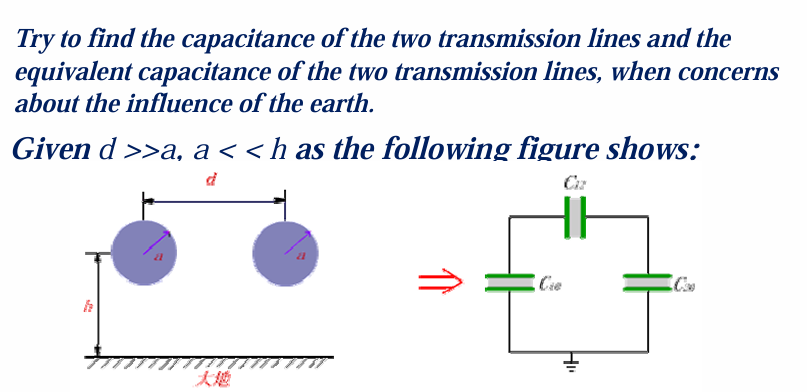
-
题干:
有两条平行的圆柱形输电线，半径均为 $a$，架设在大地上方 $h$ 米处，两导线中心距为 $d$。大地视为理想导体，电位为 $0$。求该系统的部分电容 $C_{10}, C_{20}, C_{12}$，以及两导线之间的等效电容（考虑大地影响）
-
求解:
-
部分电容基本方程:
每根导线上的总电荷 = 对地电容贡献 + 与另一根导线之间互电容的贡献（电压差驱动）
对于两个导体（加地）的系统，部分电容模型给出：
$$ \begin{aligned} \tau_1 &= C_{10},\varphi_1 + C_{12},(\varphi_1 - \varphi_2) \ \tau_2 &= C_{21},(\varphi_2 - \varphi_1) + C_{20},\varphi_2 \end{aligned} $$
这里 $\tau_1, \tau_2$ 是单位长度电荷（因为输电线很长，通常按单位长度考虑），$\varphi_1, \varphi_2$ 是导线对地的电位。
推导:
由前文已知： $$ q_1 = \beta_{11}\varphi_1 + \beta_{12}\varphi_2,\quad q_2 = \beta_{21}\varphi_1 + \beta_{22}\varphi_2 $$ 并且部分电容定义为： $$ C_{10} = \beta_{11}+\beta_{12},\quad C_{12} = -\beta_{12},\quad C_{20} = \beta_{21}+\beta_{22},\quad C_{21}= -\beta_{21}=C_{12} $$ 代入验证： $$ \begin{aligned} C_{10}\varphi_1 + C_{12}(\varphi_1-\varphi_2) &= (\beta_{11}+\beta_{12})\varphi_1 - \beta_{12}(\varphi_1-\varphi_2) \ &= \beta_{11}\varphi_1 + \beta_{12}\varphi_2 = q_1 \end{aligned} $$ 第二式同理。所以两组式子是等价的，只是部分电容形式更直观，便于电路分析。
-
求解方程 $$ \begin{aligned} \tau_1 &= C_{10},\varphi_1 + C_{12},(\varphi_1 - \varphi_2) \ \tau_2 &= C_{21},(\varphi_2 - \varphi_1) + C_{20},\varphi_2 \end{aligned} $$
这是一个线性方程组。为了确定这三个未知系数，我们只需要两组独立的实验（或计算），每组实验给定一组 $(\tau_1, \tau_2)$，测量对应的 $(\varphi_1, \varphi_2)$，然后解出系数
由于部分电容 $C_{10}, C_{12}, C_{20}$ 是只与系统几何和介质有关的常数，与电荷、电位无关
我们可以假设 $\tau_1=1, \tau_2=0$
因为最方便简单的就是单位电荷，同时，线性系统满足叠加原理。任何一组 $(\tau_1, \tau_2)$ 都可以写成 $(1,0)$ 和 $(0,1)$ 的线性组合。一旦我们知道了单位激励下的电位响应（即电位系数），就可以用叠加得到任意电荷下的电位。反过来，我们也是通过这些特定激励下的电位测量值来反推出 $C$ 系数
- 第一组：$\tau_1=1, \tau_2=0$（只给导线1充电，导线2悬空不带净电荷）
- 第二组：$\tau_1=0, \tau_2=1$（只给导线2充电）
现在我们把 $\tau_1=1, \tau_2=0$ 以及上面求出的 $\varphi_1, \varphi_2$ 代入部分电容方程：
$$ \begin{cases} 1 = C_{10},\varphi_1 + C_{12},(\varphi_1 - \varphi_2) \[4pt] 0 = C_{12},(\varphi_2 - \varphi_1) + C_{20},\varphi_2 \end{cases} $$
注意 $C_{21}=C_{12}$。
-
求表达式中的电势 $\varphi_1, \varphi_2$的具体表达式
镜像法
对于地面（导体）上方的电荷，地面会感应出相反的电荷分布。为了保持地面为等势面（$0$ 电位），我们可以用一个镜像电荷来代替地面的影响：在地面下方对称位置放置一个等量异号的电荷。这样，原电荷与镜像电荷共同产生的电场，在原来地面所在平面上电位正好为 $0$，并且上半空间的电场与有地面时的真实电场完全相同。
- 导线1的真实电荷：$+\tau_1 = +1$（单位长度），位置 $(0, h)$（设导线1在 $x=0$）。
- 它的镜像：在 $(0, -h)$ 处放 $-1$ 的电荷。
- 导线2的真实电荷：$\tau_2 = 0$，所以它没有电荷，但它的镜像呢？如果导线2不带电，它的镜像也不带电（因为镜像电荷等于真实电荷的相反数）。所以导线2的镜像也是 $0$。
因此，上半空间（$y>0$）的电场由四个“线电荷”产生：
- 真实导线1：$+1$ 在 $(0, h)$
- 真实导线2：$0$ 在 $(d, h)$（无贡献）
- 镜像导线1：$-1$ 在 $(0, -h)$
- 镜像导线2：$0$ 在 $(d, -h)$
实际上只有两个有电荷：$+1$ 和 $-1$。
对于一根无限长直导线，单位长度电荷为 $\tau$，在距离导线 $r$ 处产生的电位（取大地为参考，即 $y=0$ 处电位为 $0$）为： $$ \varphi(r) = \frac{\tau}{2\pi\varepsilon_0} \ln\frac{r_0}{r} $$ 其中 $r_0$ 是某个参考距离。通常我们取 $r_0$ 使得当 $r=0$ 时电位无限大，但实际中导线表面电位需要用到导线半径。更常用的形式是：对于一根带电线，其自身表面的电位（用镜像法计算时）为： $$ \varphi = \frac{\tau}{2\pi\varepsilon_0} \ln\frac{\text{到镜像的距离}}{\text{导线半径}} $$ 这是因为镜像法将地面问题转化为无界空间中的一对正负线电荷，它们共同在导线表面产生的电位，就是该表达式: $$ \varphi_1 = \frac{1}{2\pi\varepsilon_0} \left( \ln\frac{2h}{a} \right) $$ 我们需要计算导线2表面（近似中心在 $(d, h)$）的电位，由两个电荷产生：
- 真实导线1（$+1$）到导线2的距离：$d$。
- 镜像导线1（$-1$）到导线2的距离：$\sqrt{(2h)^2 + d^2}$。
因此： $$ \varphi_2 = \frac{1}{2\pi\varepsilon_0} \left( \ln\frac{1}{d} - \ln\frac{1}{\sqrt{4h^2+d^2}} \right) = \frac{1}{2\pi\varepsilon_0} \ln\frac{\sqrt{4h^2+d^2}}{d} $$
-
求解方程组 $$ 1 = C_{10}\cdot\frac{1}{2\pi\varepsilon_0}\ln\frac{2h}{a} + C_{12}\cdot\frac{1}{2\pi\varepsilon_0}\left(\ln\frac{2h}{a} - \ln\frac{\sqrt{4h^2+d^2}}{d}\right)\ 0 = C_{12}\cdot\frac{1}{2\pi\varepsilon_0}\left(\ln\frac{\sqrt{4h^2+d^2}}{d} - \ln\frac{2h}{a}\right) + C_{20}\cdot\frac{1}{2\pi\varepsilon_0}\ln\frac{\sqrt{4h^2+d^2}}{d}\ C_{10} = C_{20} $$
-
结果: $$ C_{10} = C_{20} = \frac{2\pi\varepsilon_0}{\ln\frac{2h\sqrt{4h^2+d^2}}{ad}} \ C_{12} =\frac{2\pi\varepsilon_0 ;\ln\frac{\sqrt{4h^2+d^2}}{d}}{\left(\ln\frac{2h}{a}\right)^2 - \left(\ln\frac{\sqrt{4h^2+d^2}}{d}\right)^2} $$
-
静电能与静电
Electrostatic energy and force
连续分布电荷系统的静电能量 Electrostatic energy in charged system
- 静电能量的来源 静电能量本质上是建立电场过程中，外力克服电场力做功转化而来的。换句话说，把电荷从无穷远（或参考点）搬到当前位置，外力做的功就储存在电场中，成为静电能。
- 几个重要假设
- 介质是线性的：电荷与电场之间满足线性关系（比如 D = εE）。
- 充电过程极其缓慢：忽略电荷运动带来的动能和电磁辐射，所有能量都变成静电能。
- 充电过程不影响最终结果：无论怎么充（比如同时按比例增加所有电荷），只要最终电荷分布和电势相同，储存的静电能就一样。
公式推导
设最终（$t$ 时刻）的电荷体密度为 $\rho(x,y,z)$，电位为 $\varphi(x,y,z)$。
我们设想一个虚拟的充电过程：所有电荷从 $0$ 开始，按相同比例 $m$ 同步增长，$m$ 从 $0$ 到 $1$。在中间某个时刻 $t’$，对应的密度和电位为：
$$ \rho’(x,y,z) = m \rho(x,y,z), \qquad \varphi’(x,y,z) = m \varphi(x,y,z) $$
这是因为在线性介质中，电位与电荷密度成正比。
在时刻 $t’$，从无穷远将一小块电荷 $dq$ 搬运到空间某点，该点的电位为 $\varphi’(x,y,z)$。外力克服电场力做的功为：
$$ \delta A = \varphi’(x,y,z) , dq $$
这里 $dq$ 是该时刻增加的电荷量。由于密度按比例增长，$dq$ 可以写成：
$$ dq = d\rho’ , dV = \big[ \rho(x,y,z) , dm \big] , dV = \rho , dm , dV $$
其中 $dV$ 是体积元。
整个系统在 $dt’$ 时间内获得的总能量增量为：
$$ dW_e = \int_V \varphi’ , dq = \int_V (m \varphi) \cdot (\rho , dm , dV) = m , dm \int_V \rho \varphi , dV $$
然后对 $m$ 从 $0$ 到 $1$ 积分，得到总静电能量：
$$ W_e = \int_0^1 dW_e = \int_0^1 m , dm \int_V \rho \varphi , dV = \left( \int_0^1 m , dm \right) \int_V \rho \varphi , dV $$
由于 $\int_0^1 m , dm = \frac{1}{2}$，所以：
$$ \boxed{W_e = \frac{1}{2} \int_V \rho \varphi , dV} $$
如果电荷分布在导体表面（面密度 $\sigma$）或细线上（线密度 $\tau$），只需将体积分换成面积分或线积分：
- 面分布：$\displaystyle W_e = \frac{1}{2} \int_S \sigma \varphi , dS$
- 线分布：$\displaystyle W_e = \frac{1}{2} \int_L \tau \varphi , dl$
对于导体系统，每个导体是等势体，$\varphi$ 在导体表面为常数，因此 $W_e = \frac{1}{2} \sum_i q_i \varphi_i$，其中 $q_i$ 是导体 $i$ 的总电荷。
能量密度
$$ w_e = \frac{1}{2} \mathbf{D} \cdot \mathbf{E} $$
对于线性各向同性介质，$\mathbf{D} = \varepsilon \mathbf{E}$，因此：
$$ w_e = \frac{1}{2} \varepsilon E^2 $$
物理意义：单位体积内储存的静电能量。整个电场的总能量为 $W_e = \int_V w_e , dV$。这是电磁场理论中最基本的能量表达式
电容
球形电容器
对于球形电容器（两个同心导体球壳，内球半径 $R_1$，外球半径 $R_2$，内球带电荷 $+Q$，外球带电荷 $-Q$），电容推导如下：
由高斯定理，在两球壳之间（$R_1 < r < R_2$）的电场强度为 $$ E = \frac{Q}{4\pi\varepsilon_0 r^2} $$ 方向沿径向。内球相对于外球的电压为 $$ U = \int_{R_1}^{R_2} E , dr = \frac{Q}{4\pi\varepsilon_0} \int_{R_1}^{R_2} \frac{dr}{r^2} = \frac{Q}{4\pi\varepsilon_0} \left( \frac{1}{R_1} - \frac{1}{R_2} \right) $$ 由电容定义 $C = Q/U$，得 $$ C = \frac{Q}{U} = \frac{4\pi\varepsilon_0}{\frac{1}{R_1} - \frac{1}{R_2}} = 4\pi\varepsilon_0 \frac{R_1 R_2}{R_2 - R_1} $$ 若外球半径 $R_2 \to \infty$，则得到孤立球电容 $C = 4\pi\varepsilon_0 R_1$
电容器能量
导体系统的静电能量
对于 $n$ 个导体，每个导体的电位为 $\varphi_K$，总电荷为 $q_K$，静电能量为：
$$ W_e = \frac{1}{2} \sum_{K=1}^{n} \varphi_K q_K $$
这是因为导体是等势体，$\int_S \sigma \varphi dS = \varphi \int_S \sigma dS = \varphi q$。
电容器
当只有两个导体（例如平行板电容器）且它们带有等量异号电荷时：
$$ q_1 = q,\quad q_2 = -q $$
电位差为 $U = \varphi_1 - \varphi_2$。能量表达式简化为：
$$ W_e = \frac{1}{2} (\varphi_1 q_1 + \varphi_2 q_2) = \frac{1}{2} \big[ \varphi_1 q + \varphi_2 (-q) \big] = \frac{1}{2} q (\varphi_1 - \varphi_2) = \frac{1}{2} q U $$
这就是 $\frac{1}{2} q_1 (U){12}$（注意 $U{12}=\varphi_1-\varphi_2$）
由电容定义 $C = q / U$（$q$ 是正极板电荷，$U$ 是电压），代入得：
$$ W_e = \frac{1}{2} q U = \frac{1}{2} C U^2 = \frac{q^2}{2C} $$
从 $W_e = \frac{q^2}{2C}$ 解出 $C$：
$$ C = \frac{q^2}{2W_e} \quad \text{或等价地} \quad C = \frac{2W_e}{q^2} $$
注意这里 $q$ 是其中一个导体上的电荷绝对值
例题
题干:
- 一个半径为 $a$ 的球体，体电荷密度 $\rho$ 均匀分布（总电荷 $Q = \frac{4}{3}\pi a^3 \rho$）。
- 球体位于真空中（介电常数 $\varepsilon_0$)
- 求整个空间的静电能 $W_e$。
解答:
由于电荷分布球对称，电场沿径向，大小只与 $r$ 有关。作半径为 $r$ 的高斯球面。
-
球内（$r < a$）：包围的电荷 $q_{\text{in}} = \rho \cdot \frac{4}{3}\pi r^3$。 高斯定理：$\oint \mathbf{E} \cdot d\mathbf{S} = E \cdot 4\pi r^2 = \frac{q_{\text{in}}}{\varepsilon_0} = \frac{\rho \cdot \frac{4}{3}\pi r^3}{\varepsilon_0}$ 解得 $E = \frac{\rho r}{3\varepsilon_0}$，方向向外。
-
球外（$r > a$）：包围的电荷为总电荷 $Q = \rho \cdot \frac{4}{3}\pi a^3$。 高斯定理：$E \cdot 4\pi r^2 = \frac{Q}{\varepsilon_0} = \frac{\rho \cdot \frac{4}{3}\pi a^3}{\varepsilon_0}$ 解得 $E = \frac{\rho a^3}{3\varepsilon_0 r^2}$。
对于静电场，能量密度 $w_e = \frac{1}{2} \mathbf{D} \cdot \mathbf{E}$。在真空中 $\mathbf{D} = \varepsilon_0 \mathbf{E}$，所以 $w_e = \frac{1}{2} \varepsilon_0 E^2$。总能量为 $W_e = \int_{\text{all space}} w_e , dV = \frac{1}{2} \varepsilon_0 \int_0^\infty E^2 \cdot 4\pi r^2 , dr$。
分两段积分：
-
球内（$0 \le r \le a$）： $E^2 = \left(\frac{\rho r}{3\varepsilon_0}\right)^2 = \frac{\rho^2 r^2}{9\varepsilon_0^2}$ 被积函数：$\frac{1}{2} \varepsilon_0 E^2 \cdot 4\pi r^2 = \frac{1}{2} \varepsilon_0 \cdot \frac{\rho^2 r^2}{9\varepsilon_0^2} \cdot 4\pi r^2 = \frac{2\pi \rho^2}{9\varepsilon_0} r^4$ 积分：$\int_0^a \frac{2\pi \rho^2}{9\varepsilon_0} r^4 dr = \frac{2\pi \rho^2}{9\varepsilon_0} \cdot \frac{a^5}{5} = \frac{2\pi \rho^2 a^5}{45\varepsilon_0}$
-
球外（$r \ge a$）： $E^2 = \left(\frac{\rho a^3}{3\varepsilon_0 r^2}\right)^2 = \frac{\rho^2 a^6}{9\varepsilon_0^2 r^4}$ 被积函数：$\frac{1}{2} \varepsilon_0 E^2 \cdot 4\pi r^2 = \frac{1}{2} \varepsilon_0 \cdot \frac{\rho^2 a^6}{9\varepsilon_0^2 r^4} \cdot 4\pi r^2 = \frac{2\pi \rho^2 a^6}{9\varepsilon_0 r^2}$ 积分：$\int_a^\infty \frac{2\pi \rho^2 a^6}{9\varepsilon_0 r^2} dr = \frac{2\pi \rho^2 a^6}{9\varepsilon_0} \left[ -\frac{1}{r} \right]_a^\infty = \frac{2\pi \rho^2 a^6}{9\varepsilon_0} \cdot \frac{1}{a} = \frac{2\pi \rho^2 a^5}{9\varepsilon_0}$
相加： $$ W_e = \frac{2\pi \rho^2 a^5}{45\varepsilon_0} + \frac{2\pi \rho^2 a^5}{9\varepsilon_0}= \frac{2\pi \rho^2 a^5}{\varepsilon_0} \left( \frac{1}{45} + \frac{1}{9} \right) \ = \frac{2\pi \rho^2 a^5}{\varepsilon_0} \cdot \frac{1+5}{45} = \frac{2\pi \rho^2 a^5}{\varepsilon_0} \cdot \frac{6}{45} = \frac{12\pi \rho^2 a^5}{45\varepsilon_0} \ = \frac{4\pi \rho^2 a^5}{15\varepsilon_0} $$
方法二:
对于球对称的电荷分布（体电荷密度 $\rho$ 常数，球半径 $a$），电位 $\varphi$ 只与 $r$ 有关。在球坐标系下，泊松方程为：
$$ \frac{1}{r^2} \frac{d}{dr} \left( r^2 \frac{d\varphi}{dr} \right) = \begin{cases} -\dfrac{\rho}{\varepsilon_0}, & r \le a \quad \text{(球内)} \[6pt] 0, & r > a \quad \text{(球外)} \end{cases} $$
球外是拉普拉斯方程（$\nabla^2 \varphi = 0$）
方程： $$ \frac{1}{r^2} \frac{d}{dr} \left( r^2 \frac{d\varphi_1}{dr} \right) = -\frac{\rho}{\varepsilon_0} $$
两边乘以 $r^2$： $$ \frac{d}{dr} \left( r^2 \frac{d\varphi_1}{dr} \right) = -\frac{\rho}{\varepsilon_0} r^2 $$
积分一次： $$ r^2 \frac{d\varphi_1}{dr} = -\frac{\rho}{\varepsilon_0} \cdot \frac{r^3}{3} + C_1 $$ 即 $$ \frac{d\varphi_1}{dr} = -\frac{\rho}{3\varepsilon_0} r + \frac{C_1}{r^2} $$
由于球心处电场有限，$r \to 0$ 时 $\frac{d\varphi_1}{dr}$ 不能发散，所以 $C_1 = 0$。于是： $$ \frac{d\varphi_1}{dr} = -\frac{\rho}{3\varepsilon_0} r $$
再积分一次： $$ \varphi_1(r) = -\frac{\rho}{6\varepsilon_0} r^2 + C_2 $$
球外拉普拉斯方程： $$ \frac{1}{r^2} \frac{d}{dr} \left( r^2 \frac{d\varphi_2}{dr} \right) = 0 $$ 积分一次：$r^2 \frac{d\varphi_2}{dr} = C_3$，即 $\frac{d\varphi_2}{dr} = \frac{C_3}{r^2}$。再积分： $$ \varphi_2(r) = -\frac{C_3}{r} + C_4 $$
无穷远处电位为零：$\varphi_2(\infty)=0 \Rightarrow C_4=0$。所以： $$ \varphi_2(r) = \frac{A}{r}, \quad \text{其中 } A = -C_3 $$
电位连续： $$ \varphi_1(a) = \varphi_2(a) \quad \Rightarrow \quad -\frac{\rho}{6\varepsilon_0} a^2 + C_2 = \frac{A}{a} $$
电场连续（$E = -\frac{d\varphi}{dr}$，无面电荷时 $D$ 法向连续，这里 $\varepsilon_0$ 相同，所以 $E$ 连续）： $$ \left. \frac{d\varphi_1}{dr} \right|{r=a} = \left. \frac{d\varphi_2}{dr} \right|{r=a} $$ 左边：$-\frac{\rho}{3\varepsilon_0} a$；右边：$-\frac{A}{a^2}$。所以： $$ -\frac{\rho}{3\varepsilon_0} a = -\frac{A}{a^2} \quad \Rightarrow \quad A = \frac{\rho a^3}{3\varepsilon_0} $$
代入电位连续方程： $$ -\frac{\rho}{6\varepsilon_0} a^2 + C_2 = \frac{\rho a^3}{3\varepsilon_0} \cdot \frac{1}{a} = \frac{\rho a^2}{3\varepsilon_0} $$ 解得： $$ C_2 = \frac{\rho a^2}{3\varepsilon_0} + \frac{\rho a^2}{6\varepsilon_0} = \frac{\rho a^2}{2\varepsilon_0} $$
- 球内：$\varphi_1(r) = -\frac{\rho}{6\varepsilon_0} r^2 + \frac{\rho a^2}{2\varepsilon_0} = \frac{\rho}{2\varepsilon_0} \left( a^2 - \frac{r^2}{3} \right)$
- 球外：$\varphi_2(r) = \frac{\rho a^3}{3\varepsilon_0 r}$
检查：当 $r=a$ 时，$\varphi_1(a)=\frac{\rho}{2\varepsilon_0}(a^2 - a^2/3)=\frac{\rho a^2}{3\varepsilon_0}$，$\varphi_2(a)=\frac{\rho a^3}{3\varepsilon_0 a}=\frac{\rho a^2}{3\varepsilon_0}$，一致。
注意：电荷只分布在球内（$r \le a$），所以积分区域只是球体内部。$\rho$ 是常数，$\varphi$ 用球内表达式 $\varphi_1(r)$。
$$ W_e = \frac{1}{2} \int_0^a \rho \cdot \varphi_1(r) \cdot 4\pi r^2 , dr $$
代入 $\varphi_1(r) = \frac{\rho}{2\varepsilon_0} \left( a^2 - \frac{r^2}{3} \right)$：
$$ W_e = \frac{1}{2} \rho \cdot \frac{\rho}{2\varepsilon_0} \int_0^a \left( a^2 - \frac{r^2}{3} \right) 4\pi r^2 , dr = \frac{\rho^2}{4\varepsilon_0} \cdot 4\pi \int_0^a \left( a^2 r^2 - \frac{r^4}{3} \right) dr $$
$$ = \frac{\pi \rho^2}{\varepsilon_0} \left[ a^2 \cdot \frac{a^3}{3} - \frac{1}{3} \cdot \frac{a^5}{5} \right] = \frac{\pi \rho^2}{\varepsilon_0} \left( \frac{a^5}{3} - \frac{a^5}{15} \right) = \frac{\pi \rho^2}{\varepsilon_0} \cdot \frac{5a^5 - a^5}{15} = \frac{\pi \rho^2}{\varepsilon_0} \cdot \frac{4a^5}{15} = \frac{4\pi \rho^2 a^5}{15\varepsilon_0} $$
与 Solution 1 结果完全相同。
自能（Self-energy）和互能（Mutual-energy）
定义
对于一个多导体系统，总静电能 $W_e = \frac{1}{2} \sum_{k} \varphi_k q_k$。但这个总能量可以分解为两部分：
- 自能：每个带电体自己的电荷之间相互作用的能量。可以理解为：如果把某个带电体上的所有电荷从无穷远（或分散状态）聚集到它上面所需要做的功。
- 互能：不同的带电体之间相互作用的能量。可以理解为：把一个带电体从无穷远移到另一个带电体产生的电场中，外力克服电场力所做的功。
假设有两个带电体（导体），编号 1 和 2。
- 当只有导体 1 存在时，它的电位为 $\varphi_1$（由它自己的电荷产生），电荷为 $q_1$。
- 当只有导体 2 存在时，它的电位为 $\varphi_2$，电荷为 $q_2$。
现在把两者都放在空间中，它们会互相影响。最终，导体 1 的电位不再是 $\varphi_1$，而是 $\varphi_1 + \Delta \varphi_{12}$，其中 $\Delta \varphi_{12}$ 是导体 2 的电荷在导体 1 处产生的额外电位。类似地，导体 2 的电位为 $\varphi_2 + \Delta \varphi_{21}$。
总能量
总静电能：
$$ W_e = \frac{1}{2} \left[ q_1 (\varphi_1 + \Delta \varphi_{12}) + q_2 (\varphi_2 + \Delta \varphi_{21}) \right] $$
展开括号：
$$ W_e = \frac{1}{2} (q_1 \varphi_1 + q_2 \varphi_2) ;+; \frac{1}{2} (q_1 \Delta \varphi_{12} + q_2 \Delta \varphi_{21}) $$
- 第一项 $\frac{1}{2}(q_1\varphi_1 + q_2\varphi_2)$：这就是自能。它只依赖于每个导体自己的电荷和它单独存在时的电位（即自身电荷产生的电位）。注意：这里的 $\varphi_1$ 是只有导体1时的电位，不是最终电位。
- 第二项 $\frac{1}{2}(q_1 \Delta \varphi_{12} + q_2 \Delta \varphi_{21})$：这就是互能。它依赖于一个导体的电荷与另一个导体的电荷在该处产生的额外电位
意义
- 在计算系统总能量时，直接使用 $\frac{1}{2}\sum \varphi_k q_k$ 就可以了，不需要分解。
- 但在研究相互作用力、电容系数的物理意义，或者考虑多体系统的能量变化时，分解为自能和互能有助于理解能量的来源和分配
虚位移法 Virtual Displacement Method
静电力
由电场强度的定义，一个点电荷 $q$ 在电场 $\mathbf{E}$ 中受到的静电力为：
$$ \mathbf{f} = q \mathbf{E} $$
对于连续分布的电荷，电荷元 $dq$ 受到的力为：
$$ d\mathbf{f} = \mathbf{E} , dq $$
这是最基本的库仑力公式，也是计算静电力的出发点。但在实际工程中，直接对电荷分布积分往往很复杂（尤其是导体表面电荷分布未知），因此需要更巧妙的方法——虚位移法
虚位移法（Virtual Displacement Method）
虚位移法基于虚功原理：当系统在静电力作用下发生一个虚拟的、无限小的位移时，电场能量的变化等于外力所做的功（或反过来，静电力做的功等于能量减少）。通过分析能量随广义坐标的变化，可以求出广义力。
广义坐标（Generalized Coordinates）
广义坐标是描述系统位形的独立参数，例如：
- 距离（如两导体板的间距）
- 面积（如电容器的极板面积）
- 体积（如介质的体积）
- 角度（如旋转电机的转角）
广义力（Generalized Forces)
广义力是试图改变相应广义坐标的力。它定义为：广义力 × 广义位移 = 功。
| 广义坐标 | 距离 | 面积 | 体积 | 角度 |
|---|---|---|---|---|
| 广义力 | 机械力 (N) | 表面张力 (N/m) | 压强 (N/m²) | 力矩 (N·m) |
- 当广义坐标是距离（如极板间距 $x$）时，广义力就是通常的机械力 $F$，满足 $\delta W = F \cdot \delta x$。
- 当广义坐标是面积 $S$ 时，广义力是表面张力 $\gamma$，满足 $\delta W = \gamma \cdot \delta S$。
- 当广义坐标是体积 $V$ 时，广义力是压强 $p$，满足 $\delta W = p \cdot \delta V$。
- 当广义坐标是角度 $\theta$ 时，广义力是力矩 $T$，满足 $\delta W = T \cdot \delta \theta$。
能量守恒关系
虚功原理的核心是能量守恒：外界对系统做的总功 = 系统静电能增量 + 机械力对外做的功。
设：
-
$dW$：外界（例如电源）对系统做的总功。
-
$dW_e$：系统静电能（电场能）的增量。
-
$f dg$：机械力 $f$（广义力）在虚位移 $dg$ 上做的功。注意：如果力是系统对外界做功，通常表达式为 $f , dg$（系统输出机械能），因此能量守恒写为： $$ dW = dW_e + f , dg $$ 或等价地，外界提供的能量一部分变成静电能，一部分变成机械功。
虚位移法基本公式
对于导体系统，静电能量 $W_e$ 是广义坐标 $g$（如极板间距）的函数。有两种常见情况：
(1) 电荷保持不变（孤立系统，$q = \text{const}$）
此时静电力为： $$ F = -\left. \frac{\partial W_e}{\partial g} \right|_{q=\text{const}} $$ 负号表示力指向能量减少的方向。
-
推导:
系统与外界无电源连接，故$dW = 0$,代入能量守恒方程: $$ 0 = dW_e + f,dg \quad\Rightarrow\quad f,dg = -dW_e. $$ 在q固定的情况下，$W_e$只是$g$的函数，因此: $$ f = -\left.\frac{\partial W_e}{\partial g}\right|_{q=\text{const}}. $$ 负号表示静电力指向使静电能减小的方向（如极板间的吸引力使间距减小，静电能降低）
(2) 电位保持不变（接恒压源，$\varphi = \text{const}$）
此时电源会做功，系统能量与电源做功之和为 $W_e’ = \frac{1}{2} \sum \varphi q$，但力仍可表示为： $$ F = +\left. \frac{\partial W_e}{\partial g} \right|_{\varphi=\text{const}} $$ （推导时需要包括电源的贡献，最终结果与电荷恒定时的力相同，但表达式形式不同。）
-
推导:
系统通过导线与恒定电压$\varphi$的电源相连。当电荷变化 $dq$ 时，电源做功为 $$ dW = \varphi,dq $$ 静电能为: $$ W_e = \frac{1}{2}\varphi q $$ 微分为: $$ dW_e = \frac{1}{2}\varphi,dq + \frac{1}{2}q,d\varphi $$ 电势恒定，$d\varphi = 0$，也就是: $$ dW_e = \frac{1}{2}\varphi,dq $$ 代入能量守恒方程: $$ \varphi,dq = \frac{1}{2}\varphi,dq + f,dg \quad\Rightarrow\quad f,dg = \frac{1}{2}\varphi,dq $$
$$ dW_e = \left.\frac{\partial W_e}{\partial g}\right|_{\varphi} dg = \frac{1}{2}\varphi,\frac{dq}{dg},dg $$
最后得: $$ f = \frac{1}{2}\varphi,\frac{dq}{dg} = \left.\frac{\partial W_e}{\partial g}\right|_{\varphi=\text{const}} $$
例题:
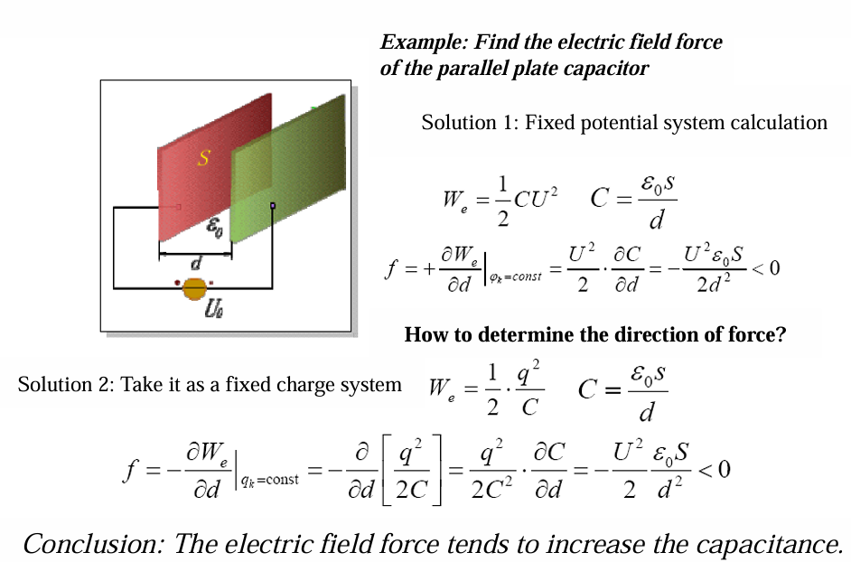
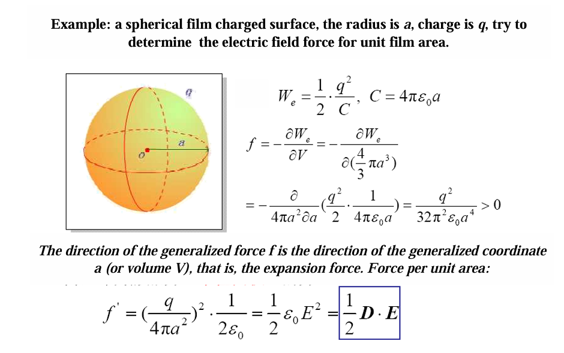
球形电容器公式见前文
法拉第电场观点
法拉第提出的电场力观点，后来发展为麦克斯韦应力张量的基础。简单来说：
-
法拉第认为电场线（电力线）具有纵向张力和横向侧压力。
-
沿电场线方向，单位面积上的张力等于垂直电场线方向的侧压力。
-
它们的数值均为： $$ f = \frac{1}{2} \mathbf{D} \cdot \mathbf{E} $$ 在线性各向同性介质中，$\mathbf{D} = \varepsilon \mathbf{E}$，所以 $f = \frac{1}{2} \varepsilon E^2$，恰好等于电场能量密度 $w_e$。
计算某个带电体所受的电场力
- 画出电场线分布。
- 在带电体表面取一个微元，该微元处的电场线方向已知。
- 该微元受到的电应力为：法向力（由侧压力贡献）和切向力（由张力贡献），但最终等效为单位面积上的力 $f = \frac{1}{2} D \cdot E$ 沿电场线方向拉，垂直于电场线方向推。
- 对整个表面积分，得到总力
电场能量密度 $w_e = \frac{1}{2} \mathbf{D} \cdot \mathbf{E}$，所以 $f = w_e$。这意味着：单位面积上的电应力大小等于该处的电场能量密度。这个结论对于许多简单情况（如平行板电容器极板间的吸引力）可以直接推出正确结果
两种情况
- 电场垂直于界面
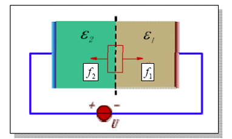
-
设两种介质的介电常数分别为 $\varepsilon_1$ 和 $\varepsilon_2$，电场方向与分界面垂直。
-
在界面上，电位移 $\mathbf{D}$ 的法向分量连续：$D_1 = D_2 = D$。
-
根据虚功原理（或麦克斯韦应力张量），单位面积上的力为： $$ f_a = f_1 - f_2 = \frac{D^2}{2} \left( \frac{1}{\varepsilon_1} - \frac{1}{\varepsilon_2} \right) $$ 其中 $f_1 = \frac{D^2}{2\varepsilon_1}$ 和 $f_2 = \frac{D^2}{2\varepsilon_2}$ 分别是两种介质中垂直于界面的应力（等于电场能量密度 $w_e = \frac{1}{2} D E = \frac{D^2}{2\varepsilon}$）。界面受力等于两侧应力之差。
-
若 $\varepsilon_2 > \varepsilon_1$，则 $1/\varepsilon_1 > 1/\varepsilon_2$，$f_a > 0$，力指向 $\varepsilon_2$ 一侧，即介质被拉向介电常数大的方向。
- 电场平行于界面
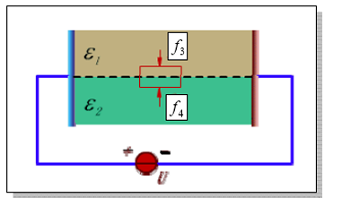
-
电场方向与分界面平行，此时电场强度 $\mathbf{E}$ 的切向分量连续：$E_1 = E_2 = E$。
-
单位面积上的力为： $$ f_b = f_4 - f_3 = \frac{E^2}{2} (\varepsilon_2 - \varepsilon_1) $$ 这里 $f_3 = \frac{1}{2} \varepsilon_1 E^2$，$f_4 = \frac{1}{2} \varepsilon_2 E^2$ 是两种介质中的能量密度。力等于能量密度之差。
-
若 $\varepsilon_2 > \varepsilon_1$，$f_b > 0$，力同样指向介电常数大的介质。
Ps:
-
图 (b) 电场平行于分界面：根据静电场的边界条件，电场强度的切向分量在界面上连续，即 $E_{1t} = E_{2t}$。如果电场方向完全平行于界面，那么两种介质中的电场强度大小相等：$E_1 = E_2 = E$。所以公式 $f_b = \frac{E^2}{2}(\varepsilon_2 - \varepsilon_1)$ 正是基于这个条件。
-
图 (a) 电场垂直于分界面：此时连续的是电位移的法向分量 $D_1 = D_2 = D$，而电场强度不相等：$E_1 = D/\varepsilon_1$，$E_2 = D/\varepsilon_2$，所以 $E_1 \neq E_2$。对应的力公式为 $f_a = \frac{D^2}{2}(1/\varepsilon_1 - 1/\varepsilon_2)$。
重要公式总结
-
静电场梯度 $$ \nabla \cdot \mathbf{E}(\mathbf{r}) = \frac{\rho(\mathbf{r})}{\varepsilon_0} $$
-
静电场的旋度 $$ \nabla \times \mathbf{E} = 0 \quad \text{(无旋性)} $$
-
环路定理 $$ \oint_l \mathbf{E} \cdot d\mathbf{l} = 0 $$
-
电势 $$ \varphi(\mathbf{r}) = \frac{1}{4\pi\varepsilon_0} \int_V \frac{\rho(\mathbf{r}’)}{|\mathbf{r} - \mathbf{r}’|} , dV' $$
-
泊松方程 $$ \mathbf{E} = -\nabla \varphi $$
$$ \nabla ^2\phi=-\frac{\rho}{\varepsilon_0} $$
-
$$ \nabla \varphi \cdot d\mathbf{r} = d\varphi $$
-
电势差: $$ \int_P^M \mathbf{E} \cdot d\mathbf{r} = -\int_P^M \nabla \varphi \cdot d\mathbf{r} = -\int_P^M d\varphi = \varphi(P) - \varphi(M) $$
-
无限长导线、无限大平面电场强度&电势
模型 电场强度 $E$ 电势 $\varphi$（常见参考点） 无限长均匀带电导线（线电荷密度 $\lambda$） $\dfrac{\lambda}{2\pi\varepsilon_0 d}$ $\dfrac{\lambda}{2\pi\varepsilon_0} \ln\dfrac{r_0}{d}$（取距导线 $r_0$ 处为零电势） 无限大均匀带电平面（面电荷密度 $\sigma$） $\dfrac{\sigma}{2\varepsilon_0}$（常数） $-\dfrac{\sigma}{2\varepsilon_0} -
电偶极子
物理量 表达式（远场近似） 备注 电势 $\varphi$ $\dfrac{\mathbf{p}\cdot\mathbf{e}_r}{4\pi\varepsilon_0 r^2}$ 球坐标系下 $\varphi = \dfrac{p\cos\theta}{4\pi\varepsilon_0 r^2}$ 电场 $\mathbf{E}$ $\dfrac{1}{4\pi\varepsilon_0 r^3} \left[ \dfrac{3(\mathbf{p}\cdot\mathbf{r})}{r^2} \mathbf{r} - \mathbf{p} \right]$ 矢量形式 球坐标分量 $E_r = \dfrac{2p\cos\theta}{4\pi\varepsilon_0 r^3},\quad E_\theta = \dfrac{p\sin\theta}{4\pi\varepsilon_0 r^3}$ $E_\varphi = 0$ -
边界条件:
| 物理量 | 分量 | 边界条件（关系式） | 连续与否 |
|---|---|---|---|
| 电势 $\varphi$ | 标量 | $\varphi_1 = \varphi_2$ | 连续 |
| 电势的法向导数 $\frac{\partial \varphi}{\partial n}$ | 法向 | $\varepsilon_1 \frac{\partial \varphi_1}{\partial n} - \varepsilon_2 \frac{\partial \varphi_2}{\partial n} = \sigma$ （注意 $\frac{\partial \varphi}{\partial n} = -E_n$） |
一般不连续 仅当 $\sigma=0$ 且 $\varepsilon_1=\varepsilon_2$ 时连续 |
| 电场强度 $\mathbf{E}$ | 切向 $E_t$ | $E_{1t} = E_{2t}$ | 连续 |
| 法向 $E_n$ | $\varepsilon_2 E_{2n} - \varepsilon_1 E_{1n} = \sigma$ | 一般不连续 仅当 $\sigma=0$ 且 $\varepsilon_1=\varepsilon_2$ 时连续 |
|
| 电位移 $\mathbf{D}$ | 切向 $D_t$ | $\frac{D_{1t}}{\varepsilon_1} = \frac{D_{2t}}{\varepsilon_2}$（由 $E_t$ 连续导出） | 一般不连续 仅当 $\varepsilon_1=\varepsilon_2$ 时连续 |
| 法向 $D_n$ | $D_{2n} - D_{1n} = \sigma$ | 当 $\sigma=0$ 时连续，否则不连续 |
-
孤立球电容: $$ C =\frac{4\pi\varepsilon_0 ab}{b-a} $$
-
无限长导线
对于一根无限长直导线，单位长度电荷为 $\tau$，在距离导线 $r$ 处产生的电位（取大地为参考，即 $y=0$ 处电位为 $0$）为： $$ \varphi(r) = \frac{\tau}{2\pi\varepsilon_0} \ln\frac{r_0}{r} $$ 其中 $r_0$ 是某个参考距离。通常我们取 $r_0$ 使得当 $r=0$ 时电位无限大，但实际中导线表面电位需要用到导线半径。更常用的形式是：对于一根带电线，其自身表面的电位（用镜像法计算时）为： $$ \varphi = \frac{\tau}{2\pi\varepsilon_0} \ln\frac{\text{到镜像的距离}}{\text{导线半径}} $$
-
部分电容
$$ \varphi_N = \alpha_{N1} q_1 + \alpha_{N2} q_2 + \cdots + \alpha_{NN} q_N $$
自电位系数$\alpha_{ii}$ $$ \alpha_{ii} = \left. \frac{\varphi_i}{q_i} \right|{\substack{q_1 = q_2 = \cdots = q{i-1}=q_{i+1}=\cdots = q_N = 0 \ q_i = -q_0}} $$
互电位系数$\alpha_{ij}(i \neq j)$ $$ \alpha_{ij} = \left. \frac{\varphi_i}{q_j} \right|{\substack{q_1 = q_2 = \cdots = q{j-1}=q_{j+1}=\cdots = q_N = 0 \ q_j = -q_0}} $$
$$ q_N = \beta_{N1}\varphi_1 + \beta_{N2}\varphi_2 + \cdots + \beta_{NN}\varphi_N $$
注意!：
$\alpha_{ii} > 0$
$\alpha_{ij} > 0$
$\beta_{ii} \le 0$
$\beta_{ij} \le 0$
对于任意导体 $i$，同理有：
$$ q_i = C_{i0}U_{i0} + \sum_{\substack{j=1 \ j\neq i}}^{N} C_{ij}U_{ij} $$
其中： $$ C_{i0} =\sum_{j=1}^N\beta_{ij}, \qquad C_{ij} = -\beta_{ij}\ (i\neq j) $$
-
静电场能量
如果电荷分布在导体表面（面密度 $\sigma$）或细线上（线密度 $\tau$），只需将体积分换成面积分或线积分：
- 面分布：$\displaystyle W_e = \frac{1}{2} \int_S \sigma \varphi , dS$
- 线分布：$\displaystyle W_e = \frac{1}{2} \int_L \tau \varphi , dl$
$$ W = \frac12 \int \rho \varphi , dV \quad \text{或} \quad W = \frac12 \int \mathbf{D} \cdot \mathbf{E} , dV $$
-
导体系统静电能
对于 $n$ 个导体，每个导体的电位为 $\varphi_K$，总电荷为 $q_K$，静电能量为：
$$ W_e = \frac{1}{2} \sum_{K=1}^{n} \varphi_K q_K $$
这是因为导体是等势体，$\int_S \sigma \varphi dS = \varphi \int_S \sigma dS = \varphi q$。
-
能量密度
$$ w_e = \frac{1}{2} \mathbf{D} \cdot \mathbf{E} $$
对于线性各向同性介质，$\mathbf{D} = \varepsilon \mathbf{E}$，因此：
$$ w_e = \frac{1}{2} \varepsilon E^2 $$
物理意义：单位体积内储存的静电能量。整个电场的总能量为 $W_e = \int_V w_e , dV$。这是电磁场理论中最基本的能量表达式，也是你图片中最后一行明确写出的结果。